devtools::load_all(quiet = TRUE)
# pmg() and pcce() build a call to plm(), so plm must be attached, not just
# namespaced.
library(plm)
data("HousePricesUS", package = "pder")
data("usaw49", package = "pder")
hp <- plm::pdata.frame(HousePricesUS)
hp_idx <- plm::index(hp)
# style = "W" records that the rows already sum to one; without it the
# object carries style "M" and some methods refuse it.
usalw <- spdep::mat2listw(usaw49, style = "W")
us <- us_states_sf()
data("RiceFarms", package = "splm")
data("riceww", package = "splm")
rice <- plm::pdata.frame(RiceFarms, index = c("id", "time"))
rice_idx <- plm::index(rice)
ricelw <- spdep::mat2listw(riceww, style = "W")4 Spatial dependence
When house prices jump in Nevada, Arizona’s follow within the year, and Maine’s do not. The previous chapter found that the 49 states share a national force, took it out with cross-state averages, and measured what was left: an exponent α of 0.51, dependence so weak that averaging over states washes it out the way it washes out noise (the exponent α). Weak is not gone. The co-movement that survives can be local: each state with its neighbours, and with nobody else.
Spatial dependence is correlation that follows a map. A unit moves with the units next to it, and the link fades with distance. The map enters the model as a spatial weights matrix W, with one row per state that says who its neighbours are and how much each counts. The pictures below put the two halves of the story side by side: the 2000 level of the house-price index, which carries the national force, and the residual of the CCE regression of the previous chapter, which does not. Clusters survive in both.
ccemg <- plm::pmg(log(price) ~ log(income), data = HousePricesUS,
model = "cmg")
hp$e_cce <- as.numeric(residuals(ccemg))
shade <- function(v) grey(1 - 0.85 * (v - min(v)) / diff(range(v)))
in_2000 <- hp_idx[[2]] == "2000"
op <- graphics::par(mfrow = c(1, 2), mar = c(0, 0, 2, 0))
plot(sf::st_geometry(us), col = shade(as.numeric(hp$price[in_2000])),
main = "Price index in 2000")
plot(sf::st_geometry(us), col = shade(hp$e_cce[in_2000]),
main = "CCEMG residual in 2000")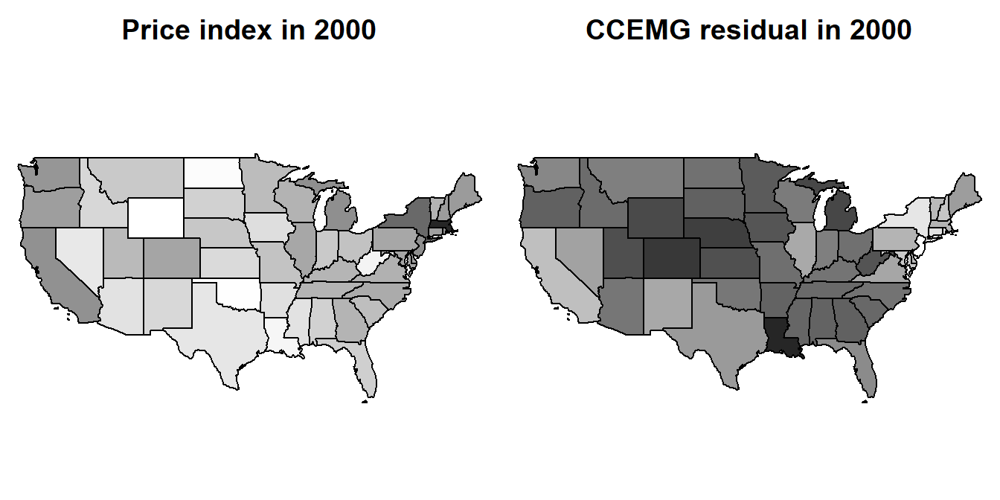
graphics::par(op)Two equations organise the chapter. A spatial lag puts the neighbours’ outcome into a unit’s own equation; a spatial error says only that the shocks are shared:
\[ y_{it} = \rho \sum_{j} w_{ij}\, y_{jt} + x_{it}'\beta + u_{it}, \qquad u_{it} = \lambda \sum_{j} w_{ij}\, u_{jt} + \varepsilon_{it}. \]
Here \(w_{ij}\) is the weight of state j in state i’s row of W, ρ is the lag parameter and λ the error parameter. This book keeps that naming throughout; the software does not, and the chapter says so where it bites. The two claims are different claims about the world, not two fits of one curve: under a spatial error, the fixed-effects estimator of the core chapter (fixed or random) stays consistent and loses precision; under a spatial lag it is biased (Pesaran 2015, 801).
In this chapter.
- Spatial weights. Who counts as a neighbour, and the four checks a W must pass before any model uses it (spatial weights; theory in spatial weights).
- Does it follow the map? Whether the dependence left after the national force is out sits between neighbours, and how to tell that from a factor in disguise (does it follow the map; theory in testing for spatial dependence).
- Lag or error? Which of the two equations the data ask for (lag or error; theory in spatial model choice).
- Fixed effects. Fit both, read the spatial parameter, check the residuals (fixed effects; theory in fitting spatial panels).
- Random effects. When the unit effect can stay in the error, and the tests that say so (random effects).
- Serial correlation too. The third thing an error can carry, and the model that holds all three (serial correlation too).
- Direct and indirect effects. Why a spatial lag coefficient is not a marginal effect (direct and indirect effects; theory in direct and indirect effects).
- Limits. Heterogeneous slopes, dynamic spatial panels and forecasts: what this chapter can check and what it can only state (limits).
- Summary (summary).
Two panels run through every step. House prices carry the story: HousePricesUS (Holly et al. 2010) with the contiguity matrix usaw49, both in pder (Croissant and Millo 2019). Rice farms carry the book checks: RiceFarms (Druska and Horrace 2004), 171 farms in six villages of West Java over six growing seasons, with the matrix riceww that calls two farms neighbours when they share a village, both in splm (Millo and Piras 2012). Every estimator and test in Croissant and Millo (2019, ch. 10) is printed on the rice panel, and with 171 units over 6 periods it is the one canonical panel shaped like the ones this book worries about: many units, few periods.
Every section has the shape of the time chapter: question, intuition, the test or estimator in words, run it, a picture, read it, a next box, and collapsed recipe, pitfalls and book check boxes at the end.
4.1 Spatial weights
Question. Who counts as Arizona’s neighbour, and what does that choice commit the model to?
Intuition. W is an assumption, not data. Row i of W lists the states whose outcome enters state i’s equation, and the weight of each. When the rows are standardised to sum to one, \(\sum_j w_{ij} y_{jt}\) is the neighbours’ average, and ρ reads as “how much of the neighbours’ average”. Three common choices encode three beliefs: states that share a border; the k nearest states; every state within some distance, the closer ones counting more. The estimates inherit whichever belief is chosen, so a spatial parameter is only comparable across fits that share a W (Anselin 1988, ch. 3).
Why the parameter space of ρ depends on W, why a SAR needs weights that are not too spread out, and why a sparse W still links every unit to every other: spatial weights.
Four checks come before any model, all cheap (Pesaran 2015, sec. 30.3):
- Parameter space. \(I - \rho W\) must be invertible. It is whenever \(|\rho| < 1/\tau^*\) with \(\tau^* = \min(\lVert W\rVert_1, \lVert W\rVert_\infty)\), the larger of the column sums against the larger of the row sums (Kelejian and Prucha 2010; Pesaran 2015, 799). The exact interval is \((1/\omega_{\min}, 1/\omega_{\max})\), with ω the real eigenvalues of W.
- Granularity. A spatial lag is endogenous only when some weights stay large as N grows. If every \(w_{ij}\) were of order \(1/N\), the lag would be a cross-section average and nothing more (Pesaran 2015, 800).
- Sparsity. W has few non-zero cells. \((I - \rho W)^{-1}\), which a spatial lag model puts between every unit and every other, has almost none (Pesaran 2015, 801).
- Standardisation. Row sums equal one, or the parameter ρ changes meaning from row to row.
Run it. usaw49 (Croissant and Millo 2019) is the binary contiguity of the 48 contiguous states and the District of Columbia, row-standardised. Arizona’s row, and how many neighbours each state has:
dim(usaw49)
usaw49["ARIZONA", usaw49["ARIZONA", ] > 0]
table(neighbours = rowSums(usaw49 > 0))[1] 49 49
CALIFORNIA COLORADO NEVADA NEW_MEXICO UTAH
0.2 0.2 0.2 0.2 0.2
neighbours
1 2 3 4 5 6 7 8
1 5 9 10 10 10 2 2 The four checks, one line each:
c(norm_1 = max(colSums(usaw49)), norm_inf = max(rowSums(usaw49)))
omega <- Re(eigen(usaw49, only.values = TRUE)$values)
c(rho_min = 1 / min(omega), rho_max = 1 / max(omega))
rownames(usaw49)[apply(usaw49, 1, max) == 1]
S <- solve(diag(49) - 0.5 * usaw49)
c(nonzero_w = mean(usaw49 > 0), nonzero_inverse = mean(abs(S) > 1e-8)) norm_1 norm_inf
1.7 1.0
rho_min rho_max
-1.392409 1.000000
[1] "MAINE"
nonzero_w nonzero_inverse
0.0907955 0.9966681 Two alternatives built from the state centroids with spdep (Bivand et al. 2013): the four nearest states, and every state within 800 km. w_checks() runs the same four checks on each:
xy <- sf::st_coordinates(sf::st_centroid(sf::st_geometry(us)))
nb_knn <- spdep::knn2nb(spdep::knearneigh(xy, k = 4, longlat = TRUE))
w_knn <- spdep::nb2mat(nb_knn, style = "W")
nb_dist <- spdep::dnearneigh(xy, 0, 800, longlat = TRUE)
w_dist <- spdep::nb2mat(nb_dist, style = "W")
round(rbind(contiguity = w_checks(usaw49), nearest_4 = w_checks(w_knn),
within_800km = w_checks(w_dist)), 3) norm_1 norm_inf rho_min rho_max max_weight nonzero_w
contiguity 1.700 1 -1.392 1 1.00 0.091
nearest_4 1.750 1 -1.815 1 0.25 0.082
within_800km 1.486 1 -1.920 1 0.50 0.200
nonzero_inverse
contiguity 0.997
nearest_4 0.904
within_800km 1.000op <- graphics::par(mfrow = c(1, 3), mar = c(0, 0, 2, 0))
plot(sf::st_geometry(us), col = "grey95", main = "Shared border")
draw_links(sf::st_geometry(us), usaw49, col = "firebrick")
plot(sf::st_geometry(us), col = "grey95", main = "Four nearest")
draw_links(sf::st_geometry(us), w_knn, col = "steelblue")
plot(sf::st_geometry(us), col = "grey95", main = "Within 800 km")
draw_links(sf::st_geometry(us), w_dist, col = "darkorange")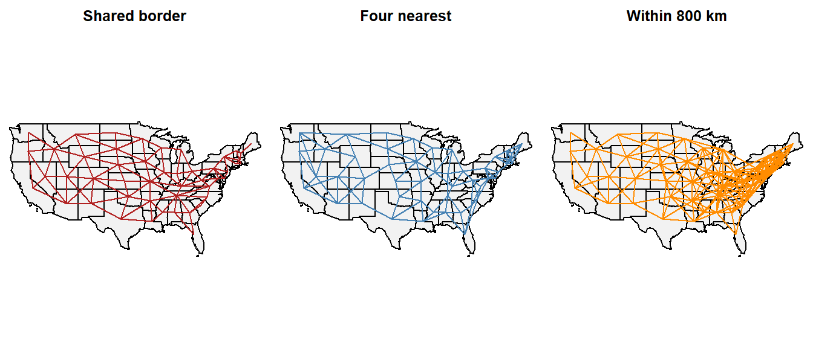
graphics::par(op)op <- graphics::par(mfrow = c(1, 2), mar = c(1, 1, 2, 1))
graphics::image(t(usaw49[49:1, ]), col = grey(seq(1, 0.1, length.out = 16)),
axes = FALSE, main = "W")
graphics::image(t(abs(S)[49:1, ]), col = grey(seq(1, 0.1, length.out = 16)),
axes = FALSE, main = expression((I - 0.5 * W)^-1))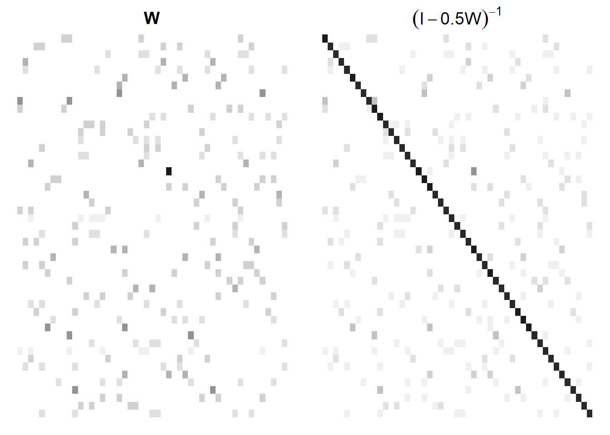
graphics::par(op)Read it.
- Parameter space. The row sums are 1 and the largest column sum is 1.7, so \(\tau^* = 1\) and any \(|\rho| < 1\) is safe. The eigenvalues widen the interval on the negative side only, to −1.39. So: a ρ̂ printed above 1 is a broken fit, not a strong spillover.
- Granularity. Maine’s row has one non-zero cell, with weight 1: its “neighbours’ average” is New Hampshire alone. Most states average two to eight neighbours. So: the lag is no cross-section average, and a SAR model will treat it as endogenous, which is right.
- Sparsity. 9% of the cells of W are non-zero; 99.7% of the cells of \((I - 0.5W)^{-1}\) are. So: a shock in California reaches Maine, through a chain of neighbours, in any spatial lag model.
- Alternatives. The four-nearest W caps every weight at 0.25 and keeps links in the West that no border justifies; the 800 km W has twice the links, almost all of them in the East. So: the chapter keeps
usaw49and reports every ρ̂ as a number for this W.
Next. With W on the table, ask whether the dependence the previous chapter left behind follows it (does it follow the map).
NoteRecipe
# w: an N x N matrix, units in the order of the panel's unit index.
w <- w / rowSums(w) # row standardise
spdep::mat2listw(w, style = "W") # what spml() takes
w_checks(w) # the four checks
xy <- sf::st_coordinates(sf::st_centroid(geometry))
spdep::knn2nb(spdep::knearneigh(xy, k = 4, longlat = TRUE))
spdep::dnearneigh(xy, 0, 800, longlat = TRUE)
CautionPitfalls
mat2listw() without style. The object then carries style M, “missing”, and methods that need to know the rows sum to one refuse it with Only row-standardised weights supported. Pass style = "W".
A disconnected W. riceww calls two farms neighbours when they share a village, so it is six blocks with nothing between them. spdep says so:
ricelw <- spdep::mat2listw(riceww, style = "W")Warning in spdep::mat2listw(riceww, style = "W"): neighbour object has 6
sub-graphsThe fit is legal. What changes is the meaning of “neighbour”: a shock in one village never reaches another, however large λ is.
Row standardisation breaks symmetry. riceww is symmetric; usaw49 is not, since Maine gives New Hampshire weight 1 and gets 1/3 back. Methods that want a symmetric W, such as the "moments" option of impacts(), need its similar symmetric form (Bivand and Wong 2018).
Units in a different order from W. Nothing checks that row i of W is the i-th unit of the panel. usaw49 follows the alphabetical order of HousePricesUS; us_states_sf() reorders the polygons to match.
TipBook check
None: the checks verify themselves. A row-standardised W must have \(\lVert W\rVert_\infty = 1\) and largest eigenvalue 1, and the bound \(1/\tau^*\) must lie inside the eigenvalue interval. All three hold above. .docs/panel-spat-PLAN.md records no published target for section 5.1.
4.2 Does it follow the map?
Question. After the national force is out, do neighbouring states’ house prices still move together more than random pairs of states do?
Intuition. The CD test of the previous chapter averages all 1 176 pairwise correlations. The local CD test averages only the 130 pairs that usaw49 names as neighbours (Pesaran 2004; Croissant and Millo 2019, sec. 10.1.2.1). A large value says neighbours move together. It does not say why: a national factor moves every pair, neighbours included, and then the neighbour pairs are a sample drawn from a population of correlated pairs, which reads as geography when it is not (Croissant and Millo 2019, sec. 10.1.2.2). The randomised-W test of Millo (2017) settles it. Shuffle the map, so that each state is handed a random set of “neighbours”, and compute the local statistic again; do that 999 times. If the states are exchangeable, the true map is nothing special and its statistic sits inside the shuffled pile. If the dependence follows the map, the true statistic is the most extreme of the thousand.
Why plain CD cannot answer this question, why local CD alone over-reads a factor as geography, and what the shuffled maps control for: testing for spatial dependence.
With \(\hat\rho_{ij}\) the correlation of units i and j over T periods and \(w_{ij} = 1\) for neighbours and 0 otherwise (Croissant and Millo 2019, sec. 10.1.2.1):
\[ CD(p) = \sqrt{\frac{T}{\sum_{i<j} w_{ij}}}\ \sum_{i<j} w_{ij}\,\hat\rho_{ij} \;\xrightarrow{d}\; N(0,1). \]
The randomised test takes a statistic τ of this kind, computes it under B shuffled maps, \(\tau_1, \dots, \tau_B\), and reports the share of shuffles at least as extreme as the true map (Croissant and Millo 2019, eq. 10.1):
\[ p = \frac{1 + \sum_{h=1}^{B} \mathbf{1}[\,|\tau_h| \ge |\tau|\,]}{B + 1}. \]
The tests. Local CD (Pesaran 2004). Null: no correlation between neighbours. A rejection means neighbours move together, for whatever reason. Randomised W (Millo 2017). Null: the units are exchangeable, so the map does not matter. A rejection means the co-movement follows this map and not merely the panel.
Run it. The four calls of Croissant and Millo (2019, sec. 10.1.2.2), in their order: the raw price index, then the residuals once the national force is out. ccemg and its residuals come from the setup chunk; mg is the same regression without the cross-state averages.
plm::pcdtest(hp$price, w = usaw49)
Pesaran CD test for local cross-sectional dependence in panels
data: hp$price
z = 37.288, p-value < 2.2e-16
alternative hypothesis: cross-sectional dependencesplm::rwtest(hp$price, w = usaw49, replications = 999, seed = 1)
Randomized W test for spatial correlation of order 1
data: formula
p-value = 0.002
alternative hypothesis: twosidedplm::pcdtest(residuals(ccemg), w = usaw49)
Pesaran CD test for local cross-sectional dependence in panels
data: residuals(ccemg)
z = 28.217, p-value < 2.2e-16
alternative hypothesis: cross-sectional dependencemg <- plm::pmg(log(price) ~ log(income), data = HousePricesUS, model = "mg")
splm::rwtest(residuals(mg), w = usaw49, replications = 999, seed = 1)
Randomized W test for spatial correlation of order 1
data: formula
p-value = 0.002
alternative hypothesis: twosidedHow large is what is left? Holly et al. (2010) fit a spatial lag model with no regressors to the defactored residuals, so that ρ measures the strength of the local co-movement on its own. spreml with errors = "ols" is that model; the pooled regression of the residual on its spatial lag, “spatial OLS”, is the shortcut that the endogeneity of \(Wy\) biases:
e_dat <- data.frame(state = hp_idx[[1]], year = hp_idx[[2]], e = hp$e_cce)
sar_e <- splm::spreml(e ~ 1, data = e_dat, w = usaw49, lag = TRUE,
errors = "ols")
summary(sar_e)$ARCoefTable
lmtest::coeftest(plm::plm(e ~ splm::slag(e, listw = usalw) - 1, data = e_dat,
model = "pooling")) Estimate Std. Error t-value Pr(>|t|)
lambda 0.6498244 0.02037004 31.90099 2.587315e-223
t test of coefficients:
Estimate Std. Error t value Pr(>|t|)
splm::slag(e, listw = usalw) 0.883112 0.025104 35.178 < 2.2e-16 ***
---
Signif. codes: 0 '***' 0.001 '**' 0.01 '*' 0.05 '.' 0.1 ' ' 1The 1 176 correlations behind the local statistic, split by whether the pair are neighbours:
e_mat <- tapply(hp$e_cce, list(hp_idx[[1]], hp_idx[[2]]), identity)
r <- stats::cor(t(e_mat))
is_pair <- lower.tri(r)
is_nb <- usaw49 > 0
r_nb <- r[is_pair & is_nb]
r_far <- r[is_pair & !is_nb]
op <- graphics::par(mfrow = c(1, 2))
graphics::hist(r_nb, breaks = 20, xlim = c(-1, 1), main = "Neighbours",
xlab = "pairwise correlation")
graphics::abline(v = c(0, mean(r_nb)), lty = c(2, 1), lwd = c(1, 3))
graphics::hist(r_far, breaks = 30, xlim = c(-1, 1), main = "Not neighbours",
xlab = "pairwise correlation")
graphics::abline(v = c(0, mean(r_far)), lty = c(2, 1), lwd = c(1, 3))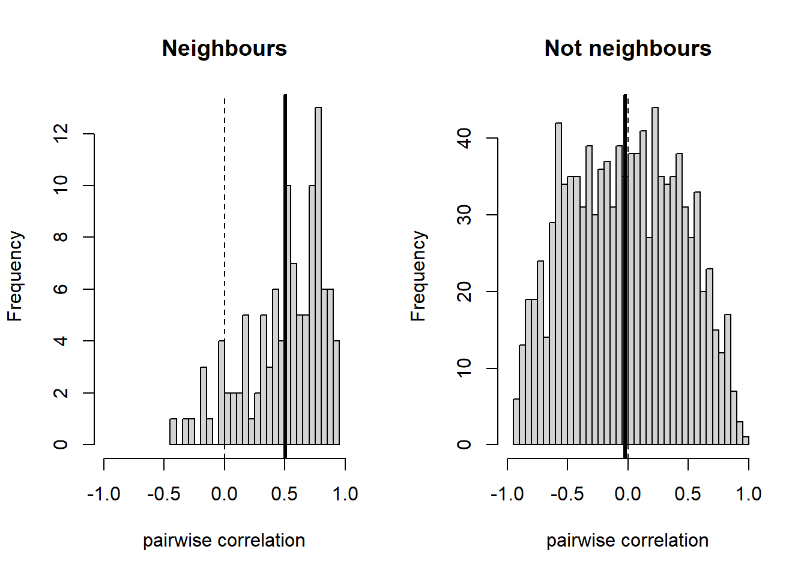
graphics::par(op)And the shuffle itself. rwtest keeps only its p-value, so the picture rebuilds it: 999 random orderings of the states, the local CD of the CCEMG residuals under each, and the value under the true map:
local_cd <- function(w) unname(plm::pcdtest(hp$e_cce, w = w)$statistic)
set.seed(1)
shuffled <- replicate(999, {
s <- sample(49)
local_cd(usaw49[s, s])
})
graphics::hist(shuffled, breaks = 30, xlim = range(c(shuffled, 30)),
main = "", xlab = "local CD under a shuffled map")
graphics::abline(v = local_cd(usaw49), lwd = 3)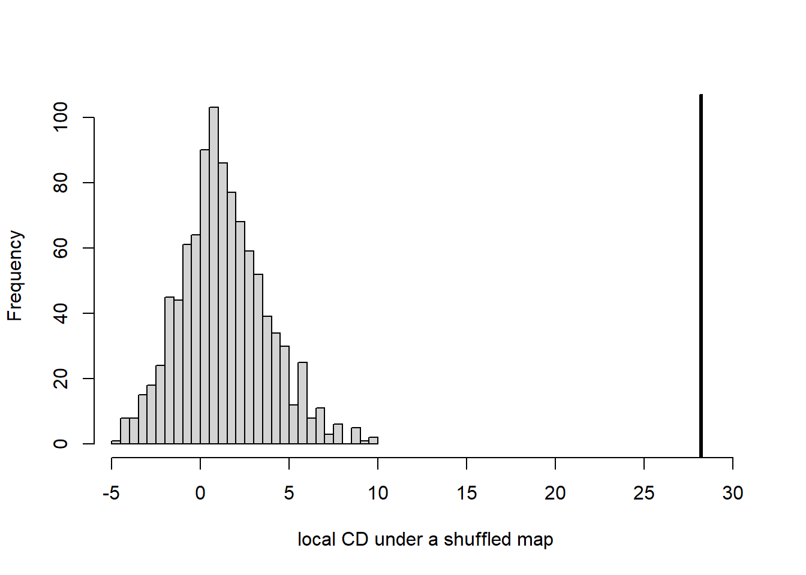
Read it.
- Rejects (price index). Local CD z = 37; the randomised test p = 0.002, the smallest value 999 shuffles can give. So: the index moves with its neighbours, but on the raw series that is also what a national force looks like.
- Rejects (residuals, national force out). Local CD on the CCEMG residuals z = 28; the randomised test on the MG residuals p = 0.002. The neighbour pile sits well to the right of the other, and the true map’s statistic is nowhere near the shuffled pile. So: the local co-movement is not a shadow of the factor. It follows the map.
- How much. ρ = 0.65 with a standard error of 0.02 on the defactored residuals. The spatial OLS shortcut says 0.88. So: a state’s residual carries about two thirds of its neighbours’ average residual, and the shortcut overstates that by a third, which is the bias of regressing on an endogenous \(Wy\).
- Misleads (local CD on the raw index). z = 37 on its own would have passed for spatial evidence, and most of it is the national force that the previous chapter measured at α = 0.83. So: never read local CD without the shuffle beside it.
Next. The dependence follows the map: decide which of the two equations it belongs in (lag or error). It does not: a spatial model buys nothing here; report standard errors robust to whatever dependence is left (robust errors).
NoteRecipe
# y: a pseries, or the residuals of a plm, pmg or pcce fit;
# w: an N x N matrix with rows in the order of the unit index.
plm::pcdtest(y, w = w) # local CD
splm::rwtest(y, w = w, replications = 999, seed = 1) # shuffled maps
splm::rwtest(y, w = w, replications = 999, seed = 1, order = 2)
CautionPitfalls
Both tests read W as yes or no. pcdtest(w = ) and rwtest(w = ) pass W through as.logical(), so a distance-weighted W is tested as “within the cutoff or not”. They test the neighbourhood structure, never the weights. Do not describe either as using an inverse-distance W.
99 shuffles is the default. The smallest p-value 99 shuffles can return is 0.01, and the pile is coarse. Use at least 999, and pass seed so the number can be reproduced.
Global CD on residuals with period effects. Two-way fixed effects and CCE both force the residuals to cancel across units in every period, which kills the global CD test by construction, as the previous chapter showed. Local CD and the randomised test survive it, because they never average over all pairs (Croissant and Millo 2019, sec. 10.1.2.2).
rwtest keeps no statistic. The object holds a p-value and nothing else; the shuffled pile has to be rebuilt by hand, as above, for a picture or for a different statistic.
TipBook check
Croissant and Millo (2019, sec. 10.1.2.2, Example 10.2) print z = 37 and p = 0.002 for the price index and z = 28 and p = 0.002 for the residuals; the four calls above are those runs, and .docs/panel-spat-PLAN.md names this four-number pattern the most useful verification target in the spatial stage. Croissant and Millo (2019, sec. 10.2.2.2, Example 10.4) print λ = 0.6498 with standard error 0.02037 for the pure spatial lag on the CCEMG residuals, and 0.8831 with 0.0251 for spatial OLS; the c03-2-sar chunk above is that run.
4.3 Lag or error?
Question. Does a neighbour’s house price move mine, or do we only share the shocks? And on a rice farm: does a neighbour’s harvest move mine, or do we share the weather?
Intuition. Fit the regression with no spatial term and look at its residuals twice. If they move with the neighbours’ outcome, a spatial lag was left out. If they move with the neighbours’ residuals, a spatial error was left out. The trouble is that each plain test also fires on the other’s problem: an omitted lag leaves a spatially correlated error behind, and vice versa. Anselin et al. (1996) made each test robust to a small amount of the other effect, so the robust lag test asks “is there a lag, allowing for some error?” and the robust error test the reverse. When one plain test rejects and its robust version does not, the signal was the other effect’s shadow.
What each specification claims about the world, what an omitted lag does to the estimates that an omitted error does not, and when the encompassing model is the honest answer: spatial model choice.
The plain error test is a Lagrange multiplier statistic on the residuals e of the non-spatial fit (Burridge 1980; Anselin et al. 1996, eq. 5):
\[ LM_\lambda = \frac{\left(e'We / \hat\sigma^2\right)^2}{\operatorname{tr}(W'W + W^2)} \;\sim\; \chi^2_1, \]
the squared spatial correlation of the residuals, scaled. The lag test replaces \(e'We\) by \(e'Wy\). The robust versions subtract from each numerator the part that the other effect would produce, so that a small λ does not inflate the lag test and a small ρ does not inflate the error test (Anselin et al. 1996, eqs. 10 and 13).
The tests. slmtest (Anselin et al. 1996; Croissant and Millo 2019, sec. 10.3.4.2): lml and lme, the plain lag and error tests; rlml and rlme, their robust versions. Null: no lag (ρ = 0), or no error (λ = 0). A rejection of a robust test means that effect is there in its own right.
Run it, house prices. The spatial model has to be fitted to the panel with the national force taken out, or it reads the factor as geography. This is the two-stage approach of Bailey et al. (2016). Stage one is the CCE transformation of the previous chapter: regress each state’s log price, and its log income, on the cross-state averages of both, and keep the residuals. Pooled OLS on those residuals is the CCEP estimator, which is the check that stage one did what it should:
lp <- log(as.numeric(hp$price))
li <- log(as.numeric(hp$income))
avg <- cbind(lp_bar = ave(lp, hp_idx[[2]]), li_bar = ave(li, hp_idx[[2]]))
hp$lp_t <- cce_partial(lp, avg, hp_idx[[1]])
hp$li_t <- cce_partial(li, avg, hp_idx[[1]])
coef(plm::plm(lp_t ~ li_t - 1, data = hp, model = "pooling")) li_t
1.199407 1.199, the CCEP slope of the previous chapter to the third decimal. Stage two asks the four questions of the transformed panel:
splm::slmtest(lp_t ~ li_t, data = hp, listw = usalw, model = "within",
test = "lml")
splm::slmtest(lp_t ~ li_t, data = hp, listw = usalw, model = "within",
test = "lme")
splm::slmtest(lp_t ~ li_t, data = hp, listw = usalw, model = "within",
test = "rlml")
splm::slmtest(lp_t ~ li_t, data = hp, listw = usalw, model = "within",
test = "rlme")
LM test for spatial lag dependence
data: formula (within transformation)
LM = 942.21, df = 1, p-value < 2.2e-16
alternative hypothesis: spatial lag dependence
LM test for spatial error dependence
data: formula (within transformation)
LM = 937.51, df = 1, p-value < 2.2e-16
alternative hypothesis: spatial error dependence
Locally robust LM test for spatial lag dependence sub spatial error
data: formula (within transformation)
LM = 32.249, df = 1, p-value = 1.356e-08
alternative hypothesis: spatial lag dependence
Locally robust LM test for spatial error dependence sub spatial lag
data: formula (within transformation)
LM = 27.547, df = 1, p-value = 1.533e-07
alternative hypothesis: spatial error dependenceRun it, rice farms. Output on seed, labour and land, all in logs, with village and season dummies, as Croissant and Millo (2019, sec. 10.3.4.2) specify it:
rice_f <- log(goutput) ~ log(seed) + log(totlabor) + log(size) + region + time
splm::slmtest(rice_f, data = rice, listw = ricelw, test = "lml")
splm::slmtest(rice_f, data = rice, listw = ricelw, test = "lme")
splm::slmtest(rice_f, data = rice, listw = ricelw, test = "rlml")
splm::slmtest(rice_f, data = rice, listw = ricelw, test = "rlme")
LM test for spatial lag dependence
data: formula
LM = 39.284, df = 1, p-value = 3.665e-10
alternative hypothesis: spatial lag dependence
LM test for spatial error dependence
data: formula
LM = 244.83, df = 1, p-value < 2.2e-16
alternative hypothesis: spatial error dependence
Locally robust LM test for spatial lag dependence sub spatial error
data: formula
LM = 0.16539, df = 1, p-value = 0.6842
alternative hypothesis: spatial lag dependence
Locally robust LM test for spatial error dependence sub spatial lag
data: formula
LM = 205.71, df = 1, p-value < 2.2e-16
alternative hypothesis: spatial error dependenceThe error signal, drawn: each unit’s residual from the non-spatial fixed-effects fit against its neighbours’ average residual. The slope of the line is Moran’s I, the correlation that \(LM_\lambda\) squares:
rice_f0 <- log(goutput) ~ log(seed) + log(totlabor) + log(size)
fe_hp <- plm::plm(lp_t ~ li_t, data = hp, model = "within")
fe_rice <- plm::plm(rice_f0, data = rice, model = "within")
moran_plot <- function(e, listw, main) {
we <- splm::slag(e, listw = listw)
plot(as.numeric(e), as.numeric(we), pch = 16, col = "grey55",
xlab = "own residual", ylab = "neighbours' average residual",
main = main)
graphics::abline(lm(as.numeric(we) ~ as.numeric(e)), lwd = 2)
graphics::abline(h = 0, v = 0, lty = 3)
}
op <- graphics::par(mfrow = c(1, 2))
moran_plot(residuals(fe_hp), usalw, "House prices")
moran_plot(residuals(fe_rice), ricelw, "Rice farms")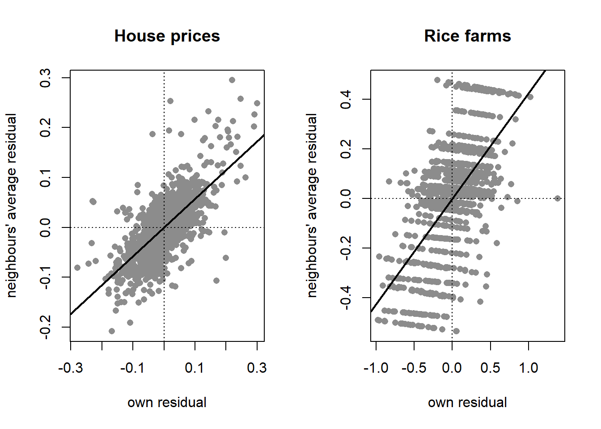
graphics::par(op)Read it.
- Rice: lag rejected only by the plain test.
lml= 39 rejects;rlml= 0.17 does not.lme= 245 andrlme= 206 both reject. So: the lag signal was the error’s shadow; the farms share shocks, and no farm’s harvest moves its neighbours’. A spatial error model. - House prices: both robust tests reject.
rlml= 32 andrlme= 28. So: neither effect can be ruled out by the other, and the tests have reached the edge of what they are built for. Fit both equations, and the model that holds both, and let the fits decide (fixed effects). - Misleads (the plain lag test on rice).
lml= 39 with p ≈ 0 would have put a neighbour’s harvest into the equation, and that coefficient would have been read as a spillover. So: report the robust pair, never a plain test alone.
Next. Error, or both: fit the model with unit effects (fixed effects). Both robust tests reject strongly: fit the encompassing SARAR there as well and read its two parameters.
NoteRecipe
# f: a formula; d: a pdata.frame; listw: from spdep::mat2listw(w, "W").
splm::slmtest(f, data = d, listw = listw, model = "within", test = "rlml")
splm::slmtest(f, data = d, listw = listw, model = "within", test = "rlme")
CautionPitfalls
slmtest pools by default. model = "pooling" is the default, and the tests were derived for a cross-section, so unit effects are ignored unless model = "within" is passed or the variables are demeaned in the formula with plm::Within(). The rice run above pools because Croissant and Millo (2019) do; the box below repeats it within.
Robust means locally robust. Each robust test tolerates a small amount of the other effect. When both robust tests reject strongly, as on house prices, the tests “can behave suboptimally”: estimate the encompassing model instead of choosing between them.
Only one kind of error. spatial.error in splm is a spatial autoregressive error. The moving-average and error-component forms of Pesaran (2015, eqs. 30.5–30.6), under which the covariance stays sparse, are not implemented anywhere in this book’s tools.
TipBook check
Croissant and Millo (2019, sec. 10.3.4.2, Example 10.11) print 39.28, 244.8, 0.1654 and 205.7 for lml, lme, rlml and rlme on the pooled rice model; the c03-3-rice chunk above is that run. They then demean the variables with Within() and print 125.2, 604.3, 1.538 and 480.6:
rice_w <- plm::Within(log(goutput)) ~ plm::Within(log(seed)) +
plm::Within(log(totlabor)) + plm::Within(log(size)) + region + time
splm::slmtest(rice_w, data = rice, listw = ricelw, test = "lml")
splm::slmtest(rice_w, data = rice, listw = ricelw, test = "lme")
splm::slmtest(rice_w, data = rice, listw = ricelw, test = "rlml")
splm::slmtest(rice_w, data = rice, listw = ricelw, test = "rlme")
LM test for spatial lag dependence
data: formula
LM = 125.22, df = 1, p-value < 2.2e-16
alternative hypothesis: spatial lag dependence
LM test for spatial error dependence
data: formula
LM = 604.25, df = 1, p-value < 2.2e-16
alternative hypothesis: spatial error dependence
Locally robust LM test for spatial lag dependence sub spatial error
data: formula
LM = 1.5377, df = 1, p-value = 0.215
alternative hypothesis: spatial lag dependence
Locally robust LM test for spatial error dependence sub spatial lag
data: formula
LM = 480.57, df = 1, p-value < 2.2e-16
alternative hypothesis: spatial error dependence4.4 Fixed effects
Question. With everything fixed about a state, or a farm, taken out: how far does a shock spread, and what happens to the slope when the model allows it to?
Intuition. Take each unit’s mean out of every variable, as the within estimator does, then fit the spatial model by maximum likelihood. The likelihood carries one term a plain regression does not, the log-determinant of \(I - \lambda W\) (or \(I - \rho W\)), which is the price of a model in which every unit’s error, or outcome, depends on every other’s. A spatial error buys precision: the within estimator was consistent already, and the spatial fit reweights the observations the way GLS does. A spatial lag buys consistency: a within estimator that leaves \(Wy\) out is biased (Pesaran 2015, 801). The generalised moments estimator skips the determinant and the normality assumption, at the price of no standard error for λ.
The likelihood with its Jacobian, what the within transformation does to it, the moment conditions behind the GM fit, and the naming trap in the printed output: fitting spatial panels.
For the spatial error model with unit effects removed, the log-likelihood is (Anselin 1988, ch. 6; Croissant and Millo 2019, sec. 10.2.3)
\[ \ln L = -\frac{NT}{2}\ln(2\pi\sigma^2) + T \ln|I_N - \lambda W| - \frac{1}{2\sigma^2}\, u' \big(I_T \otimes B'B\big)\, u, \qquad B = I_N - \lambda W, \]
with \(u = \tilde y - \tilde X\beta\) the within residuals. The spatial lag model puts \(B\) on the outcome instead, \(B\tilde y = \tilde X\beta + u\), and the two together give the SARAR model.
The estimators. spml(model = "within") (Millo and Piras 2012; Croissant and Millo 2019, sec. 10.3.1): spatial.error = "b" for the error, lag = TRUE for the lag, both for SARAR. spgm(model = "within", spatial.error = TRUE) for the GM fit (Kapoor et al. 2007; Mutl and Pfaffermayr 2011). In the printed output of a within fit the lag parameter is called lambda and the error parameter rho, the reverse of this book’s naming; the text below translates.
Run it, house prices. On the transformed panel of the previous section. The plain within fit first, for the slope the spatial fits are compared with:
summary(fe_hp)$coefficients Estimate Std. Error t-value Pr(>|t|)
li_t 1.199407 0.07631961 15.71557 2.679033e-51sem_hp <- splm::spml(lp_t ~ li_t, data = hp, listw = usalw,
model = "within", lag = FALSE, spatial.error = "b")
summary(sem_hp)$CoefTable Estimate Std. Error t-value Pr(>|t|)
rho 0.6852613 0.02011177 34.07265 1.875440e-254
li_t 0.8609375 0.06284369 13.69966 1.019941e-42sar_hp <- splm::spml(lp_t ~ li_t, data = hp, listw = usalw,
model = "within", lag = TRUE, spatial.error = "none")
summary(sar_hp)$CoefTable Estimate Std. Error t-value Pr(>|t|)
lambda 0.6449351 0.02039986 31.61468 2.320132e-219
li_t 0.7152472 0.05640513 12.68053 7.581287e-37sarar_hp <- splm::spml(lp_t ~ li_t, data = hp, listw = usalw,
model = "within", lag = TRUE, spatial.error = "b")
summary(sarar_hp)$CoefTable Estimate Std. Error t-value Pr(>|t|)
lambda -0.5235494 0.05109143 -10.24731 1.216889e-24
rho 0.8689611 0.01481054 58.67181 0.000000e+00
li_t 0.7046391 0.05685361 12.39392 2.819186e-35gm_hp <- splm::spgm(lp_t ~ li_t, data = hp, listw = usaw49,
model = "within", lag = FALSE, spatial.error = TRUE)
coef(gm_hp)
gm_hp$rho li_t
0.8694471
Estimate
rho 0.653256588
sigma^2_v 0.002664251Then the check that closes the loop. A spatial error model’s residuals \(u = \tilde y - \tilde X\hat\beta\) are correlated across neighbours by construction; that is what the model says about them. What it claims to be free of spatial correlation is the innovation \(\varepsilon = (I - \hat\lambda W)u\), period by period. Test both:
hp$u_sem <- splm_residuals(sem_hp, hp_idx)
hp$eps_sem <- spatial_filter(hp$u_sem, usaw49, coef(sem_hp)[["rho"]], hp_idx)
plm::pcdtest(hp$u_sem, w = usaw49)
splm::rwtest(hp$u_sem, w = usaw49, replications = 999, seed = 1)
plm::pcdtest(hp$eps_sem, w = usaw49)
splm::rwtest(hp$eps_sem, w = usaw49, replications = 999, seed = 1)
Pesaran CD test for local cross-sectional dependence in panels
data: hp$u_sem
z = 31.658, p-value < 2.2e-16
alternative hypothesis: cross-sectional dependence
Randomized W test for spatial correlation of order 1
data: formula
p-value = 0.002
alternative hypothesis: twosided
Pesaran CD test for local cross-sectional dependence in panels
data: hp$eps_sem
z = 0.52872, p-value = 0.597
alternative hypothesis: cross-sectional dependence
Randomized W test for spatial correlation of order 1
data: formula
p-value = 0.542
alternative hypothesis: twosidedRun it, rice farms. The same five fits on output, seed, labour and land, farm effects removed, as Croissant and Millo (2019, sec. 10.3.1) fit them:
summary(fe_rice)$coefficients Estimate Std. Error t-value Pr(>|t|)
log(seed) 0.2095572 0.03182723 6.584212 7.989993e-11
log(totlabor) 0.2891663 0.03549156 8.147465 1.319048e-15
log(size) 0.5023701 0.03801667 13.214469 2.114140e-36sem_rice <- splm::spml(rice_f0, data = rice, listw = ricelw,
model = "within", lag = FALSE, spatial.error = "b")
summary(sem_rice)$CoefTable Estimate Std. Error t-value Pr(>|t|)
rho 0.7913145 0.02485271 31.840168 1.800793e-222
log(seed) 0.1342188 0.02259129 5.941172 2.829907e-09
log(totlabor) 0.2505424 0.02672403 9.375173 6.906214e-21
log(size) 0.5419474 0.02732209 19.835504 1.470349e-87sar_rice <- splm::spml(rice_f0, data = rice, listw = ricelw,
model = "within", lag = TRUE, spatial.error = "none")
summary(sar_rice)$CoefTable Estimate Std. Error t-value Pr(>|t|)
lambda 0.5115918 0.02184495 23.419227 2.722429e-121
log(seed) 0.1345053 0.02451261 5.487190 4.083786e-08
log(totlabor) 0.2317823 0.02731703 8.484904 2.158971e-17
log(size) 0.5027685 0.02914417 17.251082 1.098232e-66sarar_rice <- splm::spml(rice_f0, data = rice, listw = ricelw,
model = "within", lag = TRUE, spatial.error = "b")
summary(sarar_rice)$CoefTable Estimate Std. Error t-value Pr(>|t|)
lambda 0.2402088 0.09528915 2.520841 1.170748e-02
rho 0.7082941 0.05083873 13.932174 4.038703e-44
log(seed) 0.1354807 0.02275804 5.953094 2.631194e-09
log(totlabor) 0.2514268 0.02684359 9.366360 7.507685e-21
log(size) 0.5449992 0.02753553 19.792579 3.449333e-87gm_rice <- splm::spgm(rice_f0, data = rice, listw = ricelw,
model = "within", lag = FALSE, spatial.error = TRUE)
summary(gm_rice)$CoefTable
gm_rice$rho Estimate Std. Error t-value Pr(>|t|)
log(seed) 0.1346070 0.02266181 5.939818 2.853393e-09
log(totlabor) 0.2507838 0.02679922 9.357880 8.135294e-21
log(size) 0.5417512 0.02740564 19.767875 5.629789e-87
Estimate
rho 0.78066305
sigma^2_v 0.08008751rice$u_sem <- splm_residuals(sem_rice, rice_idx)
rice$eps_sem <- spatial_filter(rice$u_sem, riceww, coef(sem_rice)[["rho"]],
rice_idx)
plm::pcdtest(rice$u_sem, w = riceww)
plm::pcdtest(rice$eps_sem, w = riceww)
splm::rwtest(rice$eps_sem, w = riceww, replications = 999, seed = 1)
Pesaran CD test for local cross-sectional dependence in panels
data: rice$u_sem
z = 46.917, p-value < 2.2e-16
alternative hypothesis: cross-sectional dependence
Pesaran CD test for local cross-sectional dependence in panels
data: rice$eps_sem
z = -0.48952, p-value = 0.6245
alternative hypothesis: cross-sectional dependence
Randomized W test for spatial correlation of order 1
data: formula
p-value = 0.038
alternative hypothesis: twosidedThe income elasticity of house prices under every treatment of the national force and of space, and the three rice elasticities under the five fits:
ci <- function(b, se) c(b, b - 1.96 * se, b + 1.96 * se)
hp$lp <- lp
hp$li <- li
fe_raw <- plm::plm(lp ~ li, data = hp, model = "within")
fe_2w <- plm::plm(lp ~ li, data = hp, model = "within", effect = "twoways")
sar_raw <- splm::spml(lp ~ li, data = hp, listw = usalw, model = "within",
lag = TRUE, spatial.error = "none")
# splm's vcov() carries no names; the summary tables do.
se_table <- function(fit) {
s <- summary(fit)
if (is.null(s$CoefTable)) s$coefficients else s$CoefTable
}
slope <- function(fit, name) ci(se_table(fit)[name, 1], se_table(fit)[name, 2])
hp_est <- rbind(
"FE, raw" = slope(fe_raw, "li"),
"two-way FE, raw" = slope(fe_2w, "li"),
"SAR-FE, raw" = slope(sar_raw, "li"),
"FE, transformed" = slope(fe_hp, "li_t"),
"SEM-FE" = slope(sem_hp, "li_t"),
"SAR-FE" = slope(sar_hp, "li_t"),
"SARAR-FE" = slope(sarar_hp, "li_t")
)
rice_fits <- list(within = fe_rice, SEM = sem_rice, SAR = sar_rice,
SARAR = sarar_rice, GM = gm_rice)
inputs <- c("log(seed)", "log(totlabor)", "log(size)")
rice_est <- do.call(rbind, lapply(inputs, function(v) {
t(sapply(rice_fits, slope, name = v))
}))
op <- graphics::par(mfrow = c(1, 2), mar = c(4, 8, 2, 1))
k <- nrow(hp_est)
plot(hp_est[, 1], k:1, xlim = range(hp_est), yaxt = "n", pch = 16,
xlab = "income elasticity", ylab = "", main = "House prices")
graphics::segments(hp_est[, 2], k:1, hp_est[, 3], k:1)
graphics::axis(2, at = k:1, labels = rownames(hp_est), las = 1, cex.axis = 0.8)
m <- nrow(rice_est)
cols <- rep(c("black", "firebrick", "steelblue"), each = 5)
plot(rice_est[, 1], m:1, xlim = range(rice_est), yaxt = "n", pch = 16,
col = cols, xlab = "elasticity", ylab = "", main = "Rice farms")
graphics::segments(rice_est[, 2], m:1, rice_est[, 3], m:1, col = cols)
graphics::axis(2, at = m:1, labels = paste(rep(c("seed", "labour", "land"),
each = 5), names(rice_fits)),
las = 1, cex.axis = 0.7)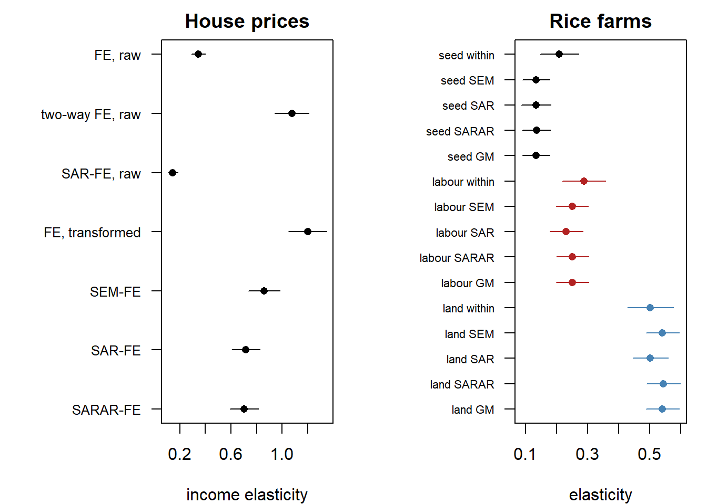
graphics::par(op)Read it.
- House prices, error. λ = 0.69 with a standard error of 0.02; the income slope is 0.86 (0.06), down from the CCEP 1.20. So: a state’s shock is two thirds shared with its neighbours, and once that sharing is weighted for, a 10% rise in income goes with a 9% rise in prices rather than 12%.
- House prices, lag. ρ = 0.65, slope 0.72. So: if the mechanism is that neighbours’ prices move prices, the own-income slope is smaller still, and the effects section says what it adds up to.
- House prices, both. SARAR returns a lag of −0.52 and an error of 0.87, opposite signs on the same W. So: with one W for both, the two parameters are barely separable (Elhorst 2014, ch. 2), and the encompassing model does not settle the question the tests left open. The chapter reports the SEM and the SAR side by side.
- House prices, the residual check. The SEM residuals u still reject, z = 32 and p = 0.002, as they must. The filtered innovations do not, z = 0.5 and p = 0.54. So: one λ on this W accounts for all the spatial correlation the shuffle could find.
- Rice, error. λ = 0.79 (0.02); slopes 0.13, 0.25 and 0.54 against the within fit’s 0.21, 0.29 and 0.50, and tighter. The filtered innovations give a local CD of −0.5 and a shuffle p of 0.04. So: with four fifths of a shock shared by the village, the GLS weighting moves the seed slope by a third; the within fit was consistent but far from efficient, and one λ captures the village shock with only a trace left.
- Rice, lag and both. SAR gives ρ = 0.51 and shrinks the slopes; SARAR puts 0.24 on the lag and 0.71 on the error, and the LR test of the lag given the error is in the random-effects section. So: the error carries the dependence, as the robust tests said.
- Rice, GM. λ = 0.78 and slopes within 0.001 of the ML ones, with no standard error on λ. So: the two estimators agree on this panel, and GM is the one to keep when the errors are not normal or not homoskedastic.
- Misleads (the raw panel). A spatial lag fitted to raw log prices with state effects gives ρ = 0.68 and an income slope of 0.15; with two-way effects, 0.60 and 0.70. So: the national force reads as geography, and the slope swings by a factor of five with how that force is handled. Space comes after the factor, never instead of it.
Next. Can the unit effect be left in the error, with the precision that buys (random effects)? On the house-price panel the question is moot, and that section says why.
NoteRecipe
# f: a formula; d: a pdata.frame; listw: from spdep::mat2listw(w, "W").
splm::spml(f, data = d, listw = listw, model = "within",
lag = FALSE, spatial.error = "b") # SEM
splm::spml(f, data = d, listw = listw, model = "within",
lag = TRUE, spatial.error = "none") # SAR
splm::spml(f, data = d, listw = listw, model = "within",
lag = TRUE, spatial.error = "b") # SARAR
splm::spgm(f, data = d, listw = w, model = "within",
lag = FALSE, spatial.error = TRUE) # SEM by GM
u <- splm_residuals(fit, plm::index(d)) # back in panel order
e <- spatial_filter(u, w, coef(fit)[["rho"]], plm::index(d))
plm::pcdtest(e, w = w) # the residual check
CautionPitfalls
The names are the wrong way round. In a spml(model = "within") fit, coef() and the printed table call the spatial lag parameter lambda and the spatial error parameter rho. Pesaran (2015, eqs. 30.1, 30.4) and this book use ρ for the lag and λ for the error. Random-effects fits name them the same way but store the lag in $arcoef and the error in $errcomp. Millo and Piras (2012) printed the reverse of today’s package. Read a parameter by what it does, never by its label.
Residuals come back in the wrong order. spml and spreml stack the panel by period, then unit; the pdata.frame is stacked by unit, then period. splm_residuals() puts them back; without it, every residual test above would run on a scrambled panel.
The within fit is a correction, not the transformation. spml demeans and then corrects the error variance after the fact, Lee and Yu’s second route (Lee and Yu 2010, sec. 3.2; Croissant and Millo 2019, sec. 10.3.1). The orthonormal transformation of their first route, whose estimator is consistent when either N or T grows, is not what runs here.
No standard error for the GM λ. spgm estimates λ from moment conditions and reports no dispersion for it, so no significance test is possible (Croissant and Millo 2019, sec. 10.3.3.3). With one regressor its summary() also fails, which is why the house-price GM fit prints coef() and $rho instead.
Heteroskedastic errors. Spatial maximum likelihood is inconsistent under heteroskedasticity of unknown form (Lin and Lee 2010; Pesaran 2015, 807). Test for it as the core chapter does (heteroskedasticity) and, if it is there, keep the GM fit.
A spatial Durbin model. \(WX\) terms are added through splm::slag() in the formula of spml, or with Durbin = TRUE in spgm. They change the effects, not the estimation.
TipBook check
Croissant and Millo (2019, sec. 10.3.1, Example 10.6) print λ = 0.7913 with standard error 0.0249 and slopes 0.1342, 0.2505 and 0.5419 for the SEM fixed-effects fit of the rice panel; Croissant and Millo (2019, sec. 10.3.3.3, Example 10.9) print λ = 0.7807, σ²ν = 0.0801 and slopes 0.1346, 0.2508 and 0.5418 for the GM fit, whose header reads “fixed effects GM model” because model = "within" is the default. The c03-4-rice-sem and c03-4-rice-gm chunks above are those runs. Millo and Piras (2012, sec. 5.2) print 0.5574 for the spatial error of a SEM-FE fit on Produc with usaww, and 0.4553 and 0.0886 for the SARAR-FE fit, where their rho is the lag:
data("Produc", package = "plm")
data("usaww", package = "splm")
prod_f <- log(gsp) ~ log(pcap) + log(pc) + log(emp) + unemp
prod_lw <- spdep::mat2listw(usaww, style = "W")
coef(splm::spml(prod_f, data = Produc, listw = prod_lw, model = "within",
lag = FALSE, spatial.error = "b"))
coef(splm::spml(prod_f, data = Produc, listw = prod_lw, model = "within",
lag = TRUE, spatial.error = "b")) rho log(pcap) log(pc) log(emp) unemp
0.557401295 0.005143840 0.205302562 0.782253980 -0.002231665
lambda rho log(pcap) log(pc) log(emp) unemp
0.088576028 0.455311612 -0.010349654 0.190578092 0.755237211 -0.003061284 4.5 Random effects
Question. If the farms are draws from one population, can the farm effect stay in the error, and is the farm effect itself shared with the neighbours?
Intuition. Two things can sit in a rice farm’s error: a farm effect, the soil and the farmer, and a village shock, the weather. Testing for one while ignoring the other misleads, so Baltagi et al. (2003) test each conditional on the other, from the plain OLS residuals. If the farm effect is uncorrelated with the inputs it can stay in the error as a random effect, and GLS then uses the between-farm variation the within fit throws away. Two spatial random-effects models follow. In Anselin’s, only the period shock is spatial: \(u_{it} = \mu_i + v_{it}\) with \(v_{\cdot t} = \lambda W v_{\cdot t} + \varepsilon_{\cdot t}\). In the model of Kapoor et al. (2007), the farm effect is spatial too: the whole composite error \(\mu_i + \varepsilon_{it}\) passes through \((I - \lambda W)^{-1}\), so a good farmer raises the neighbours’ output as well. The spatial Hausman test of Mutl and Pfaffermayr (2011) then compares the random-effects fit with the fixed-effects one of the previous section: if they differ by more than their precision allows, the farm effect is correlated with the inputs and only the fixed-effects fit is consistent.
The two error covariances, why the conditional tests exist, and what the spatial Hausman statistic compares: fitting spatial panels.
With \(\phi = \sigma^2_\mu / \sigma^2_\varepsilon\) the variance ratio of the farm effect to the shock, the two covariances are (Croissant and Millo 2019, sec. 10.3.2)
\[ \Omega_{\text{Anselin}} = \sigma^2_\varepsilon \big[ \phi\, (J_T \otimes I_N) + I_T \otimes (B'B)^{-1} \big], \qquad \Omega_{\text{KKP}} = \sigma^2_\varepsilon \big[ \phi\, J_T + I_T \big] \otimes (B'B)^{-1}, \]
with \(J_T\) the T × T matrix of ones and \(B = I_N - \lambda W\). The Hausman statistic is \(H = (\hat\beta_{RE} - \hat\beta_{FE})' [\widehat{V}_{FE} - \widehat{V}_{RE}]^{-1} (\hat\beta_{RE} - \hat\beta_{FE}) \sim \chi^2_k\) (Mutl and Pfaffermayr 2011; Millo and Piras 2012, eq. 32).
The tests and estimators. bsktest (Baltagi et al. 2003): LMH, the joint test of no farm effect and no spatial error; CLMmu, a farm effect given a spatial error; CLMlambda, a spatial error given a farm effect. spml( model = "random") with spatial.error = "b" (Anselin) or "kkp". sphtest (Mutl and Pfaffermayr 2011): null, both estimators are consistent and the random-effects one is efficient.
Run it, rice farms. The three tests on the pooled model with village and season dummies, as Croissant and Millo (2019, sec. 10.3.4.1) run them:
splm::bsktest(rice_f, data = rice, listw = ricelw, test = "LMH")
Baltagi, Song and Koh LM-H one-sided joint test
data: log(goutput) ~ log(seed) + log(totlabor) + log(size) + region + time
LM-H = 305.52, p-value < 2.2e-16
alternative hypothesis: Random Regional Effects and Spatial autocorrelationsplm::bsktest(rice_f, data = rice, listw = ricelw, test = "CLMmu")
Baltagi, Song and Koh LM*- mu conditional LM test (assuming lambda may
or may not be = 0)
data: log(goutput) ~ log(seed) + log(totlabor) + log(size) + region + time
LM*-mu = 10.991, p-value < 2.2e-16
alternative hypothesis: Random regional effectssplm::bsktest(rice_f, data = rice, listw = ricelw, test = "CLMlambda")
Baltagi, Song and Koh LM*-lambda conditional LM test (assuming
sigma^2_mu >= 0)
data: log(goutput) ~ log(seed) + log(totlabor) + log(size) + region + time
LM*-lambda = 21.248, p-value < 2.2e-16
alternative hypothesis: Spatial autocorrelationThen the two random-effects fits, a spatial lag with random effects for comparison, and the Hausman test, on the three inputs alone, as in Croissant and Millo (2019, sec. 10.3.3.2):
semre_rice <- splm::spml(rice_f0, data = rice, listw = ricelw,
model = "random", lag = FALSE, spatial.error = "b")
summary(semre_rice)$ErrCompTable
summary(semre_rice)$CoefTable Estimate Std. Error t-value Pr(>|t|)
phi 0.2955352 0.05646769 5.233703 1.661470e-07
rho 0.7747825 0.02711845 28.570310 1.571533e-179
Estimate Std. Error t-value Pr(>|t|)
(Intercept) 5.6982766 0.17973417 31.703913 1.372233e-220
log(seed) 0.1520420 0.02350089 6.469628 9.824473e-11
log(totlabor) 0.2562200 0.02720574 9.417866 4.603475e-21
log(size) 0.5756683 0.02746859 20.957329 1.608643e-97kkp_rice <- splm::spml(rice_f0, data = rice, listw = ricelw,
model = "random", lag = FALSE, spatial.error = "kkp")
summary(kkp_rice)$ErrCompTable
summary(kkp_rice)$CoefTable Estimate Std. Error t-value Pr(>|t|)
phi 0.2959406 0.05693630 5.19775 2.017156e-07
rho 0.7686276 0.02766607 27.78232 7.095173e-170
Estimate Std. Error t-value Pr(>|t|)
(Intercept) 5.6985756 0.18643543 30.565948 3.471604e-205
log(seed) 0.1518061 0.02357902 6.438188 1.209085e-10
log(totlabor) 0.2564248 0.02725780 9.407393 5.085954e-21
log(size) 0.5763437 0.02751809 20.944175 2.120373e-97sarre_rice <- splm::spml(rice_f0, data = rice, listw = ricelw,
model = "random", lag = TRUE, spatial.error = "none")
summary(sarre_rice)$ErrCompTable
summary(sarre_rice)$ARCoefTable Estimate Std. Error t-value Pr(>|t|)
phi 0.3689618 0.07003006 5.26862 1.37453e-07
Estimate Std. Error t-value Pr(>|t|)
lambda 0.4132022 0.02678547 15.42636 1.088458e-53The Hausman test is conditional on a spatial model, so it is run under both, the error model the tests chose and the lag model Croissant and Millo (2019, sec. 10.3.1) run it under:
splm::sphtest(rice_f0, data = rice, listw = ricelw, spatial.model = "error",
method = "ML")
splm::sphtest(rice_f0, data = rice, listw = ricelw, spatial.model = "lag",
method = "ML")
Hausman test for spatial models
data: x
chisq = 31.153, df = 3, p-value = 7.892e-07
alternative hypothesis: one model is inconsistent
Hausman test for spatial models
data: x
chisq = 0.63485, df = 3, p-value = 0.8884
alternative hypothesis: one model is inconsistentThe encompassing model with random effects answers the question the previous section left to it, whether the lag adds anything given the error, by a likelihood ratio, on the model with village and season dummies as Croissant and Millo (2019, sec. 10.3.4.2) fit it:
sararre_d <- splm::spml(rice_f, data = rice, listw = ricelw,
model = "random", lag = TRUE, spatial.error = "b")
semre_d <- splm::spml(rice_f, data = rice, listw = ricelw,
model = "random", lag = FALSE, spatial.error = "b")
sararre_d$arcoef
lr <- 2 * (sararre_d$logLik - semre_d$logLik)
c(LR = lr, p = stats::pchisq(lr, df = 1, lower.tail = FALSE)) lambda
-0.01337638
LR p
0.01219301 0.91207472 Run it, house prices. The transformed panel has no state effect left in it: stage one partialled each state’s mean out together with the national force. The joint and the first conditional test run; the second stops in a singular Hessian, and the Hausman test returns zero:
splm::bsktest(lp_t ~ li_t, data = hp, listw = usalw, test = "LMH")
splm::bsktest(lp_t ~ li_t, data = hp, listw = usalw, test = "CLMmu")
Baltagi, Song and Koh LM-H one-sided joint test
data: lp_t ~ li_t
LM-H = 937.51, p-value < 2.2e-16
alternative hypothesis: Random Regional Effects and Spatial autocorrelation
Baltagi, Song and Koh LM*- mu conditional LM test (assuming lambda may
or may not be = 0)
data: lp_t ~ li_t
LM*-mu = 4.393, p-value = 1.118e-05
alternative hypothesis: Random regional effectssplm::bsktest(lp_t ~ li_t, data = hp, listw = usalw, test = "CLMlambda")Error in `solve.default()`:
! Lapack routine dgesv: system is exactly singular: U[1,1] = 0splm::sphtest(lp_t ~ li_t, data = hp, listw = usalw, spatial.model = "error",
method = "ML")
Hausman test for spatial models
data: x
chisq = 1.3795e-08, df = 1, p-value = 0.9999
alternative hypothesis: one model is inconsistentThe spatial parameter and the variance ratio under each rice fit:
row_ci <- function(tab, name) ci(tab[name, 1], tab[name, 2])
spat <- rbind(
"SEM, fixed" = row_ci(summary(sem_rice)$CoefTable, "rho"),
"SEM, random" = row_ci(summary(semre_rice)$ErrCompTable, "rho"),
"KKP, random" = row_ci(summary(kkp_rice)$ErrCompTable, "rho"),
"SAR, random" = row_ci(summary(sarre_rice)$ARCoefTable, "lambda")
)
phi <- rbind(
"SEM, random" = row_ci(summary(semre_rice)$ErrCompTable, "phi"),
"KKP, random" = row_ci(summary(kkp_rice)$ErrCompTable, "phi"),
"SAR, random" = row_ci(summary(sarre_rice)$ErrCompTable, "phi")
)
dots <- function(est, xlab, main) {
k <- nrow(est)
plot(est[, 1], k:1, xlim = range(est), yaxt = "n", pch = 16, xlab = xlab,
ylab = "", main = main)
graphics::segments(est[, 2], k:1, est[, 3], k:1)
graphics::axis(2, at = k:1, labels = rownames(est), las = 1, cex.axis = 0.8)
}
op <- graphics::par(mfrow = c(1, 2), mar = c(4, 7, 2, 1))
dots(spat, "spatial parameter", "Lag or error")
dots(phi, "variance ratio of the farm effect", "Farm effect")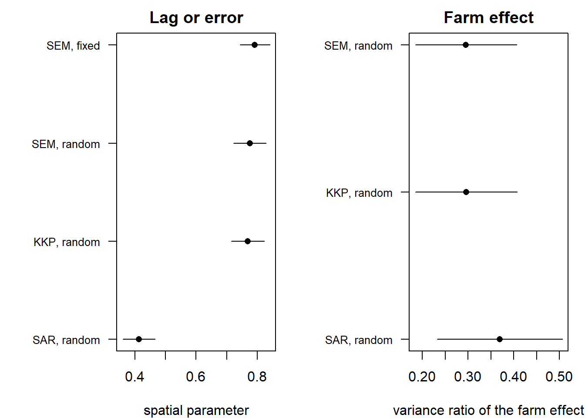
graphics::par(op)Read it.
- Rice, the joint test. LMH = 306 rejects. So: a farm effect, or a spatial error, or both; the joint test cannot say which, which is why it is “of little use” (Croissant and Millo 2019, sec. 10.3.4.1).
- Rice, each given the other. CLMmu = 11 and CLMlambda = 21 both reject. So: there is a farm effect even allowing for the village shock, and a village shock even allowing for the farm effect.
- Rice, the two random-effects models. φ = 0.30 and λ = 0.77 under Anselin’s model; φ = 0.30 and λ = 0.77 under KKP’s. So: the farm effect is small, a third of the shock variance, and too small for it to matter whether it travels to the neighbours.
- Rice, Hausman under the error model. χ² = 31 on 3 degrees of freedom, p ≈ 0. So: the random-effects slopes sit too far from the fixed-effects ones; the farm effect is correlated with the inputs, and only the fixed-effects SEM of the previous section is consistent.
- Misleads (Hausman under the lag model). χ² = 0.6, p = 0.9: the same question under the model the robust tests rejected does not reject. So: the Hausman verdict is conditional on the spatial model, and a paper that ran it under the wrong one would have kept random effects. The precision they buy is visible in the picture; it is not on offer here.
- Rice, the lag given the error. The SARAR random-effects fit puts −0.01 on the lag, and the likelihood ratio has p = 0.91. So: the spatial error is the whole story; the SAR fit’s ρ = 0.41 was the error’s shadow once more.
- House prices: not applicable, and the output says so. The conditional test for a spatial error stops in a singular Hessian, and the Hausman test finds the two fits identical: there is no state effect left to estimate, because stage one removed it. So: on a CCE-transformed panel the fixed-effects fits of the previous section are the only ones, and that is not a loss. A state effect correlated with income was never going to be random.
Next. The error can carry a third thing, last season’s shock (serial correlation too).
NoteRecipe
# f: a formula; d: a pdata.frame; listw: from spdep::mat2listw(w, "W").
splm::bsktest(f, data = d, listw = listw, test = "CLMmu")
splm::bsktest(f, data = d, listw = listw, test = "CLMlambda")
splm::spml(f, data = d, listw = listw, model = "random",
lag = FALSE, spatial.error = "b") # Anselin
splm::spml(f, data = d, listw = listw, model = "random",
lag = FALSE, spatial.error = "kkp") # KKP
splm::sphtest(f, data = d, listw = listw, spatial.model = "error",
method = "ML")
CautionPitfalls
The joint test rejects for either reason. Go straight to the two conditional tests.
The random-effects likelihood is not well behaved. spreml, which spml(model = "random") calls, uses nlminb from zero starting values; initval = "estimate" starts from the restricted fits and often helps before any change of optimiser (Croissant and Millo 2019, sec. 10.3.3.2). A singular Hessian, as on the transformed house-price panel, means a parameter is not there to estimate.
Where the parameters live. In a random-effects fit the lag is $arcoef and the error and φ are in $errcomp, with their covariance in $vcov.arcoef and $vcov.errcomp; in a within fit all of them sit in coef().
The Hausman test by GM. sphtest(method = "GM") compares the GM random- and fixed-effects fits and needs no error structure; the ML version takes errors = "BSK" or "KKP". Two fitted splm objects can also be passed directly, sphtest(x = fit_re, x2 = fit_fe).
TipBook check
Croissant and Millo (2019) print, on the rice panel, to two significant digits: LMH = 310, CLMmu = 11 and CLMlambda = 21 [sec. 10.3.4.1, Example 10.10], against 305.5, 11.0 and 21.2 above; φ = 0.2955 and λ = 0.7748 with slopes 0.1520, 0.2562, 0.5757 under Anselin’s model and φ = 0.2959, λ = 0.7686, slopes 0.1518, 0.2564, 0.5763 under KKP’s [sec. 10.3.3.2, Example 10.8]; φ = 0.3690 and ρ = 0.4132 for the random-effects spatial lag [Example 10.7]; −0.0134 for the lag given the error and p = 0.9121 for its likelihood-ratio test [sec. 10.3.4.2, Examples 10.12–10.13]. The chunks above are those runs. For the Hausman test under the lag model, their default, they print χ² = 2.6 on 3 degrees of freedom with p = 0.4 [sec. 10.3.1]; the installed version returns 0.63 with p = 0.89, the same verdict and not the same number, and the difference is unexplained.
Millo and Piras (2012, sec. 7) print, on Produc: SLM1 = 0.083 with p = 0.9338, SLM2 = 0.0151 with p = 0.988, LM*-λ = 9.7157, and a GM Hausman test of 7.4824 on 4 degrees of freedom with p = 0.1125. The installed version does not reproduce them, so that paper’s test output is not a usable target; the rice numbers above are:
splm::bsktest(prod_f, data = Produc, listw = prod_lw, test = "LM1",
standardize = TRUE)
splm::bsktest(prod_f, data = Produc, listw = prod_lw, test = "LM2",
standardize = TRUE)
splm::bsktest(prod_f, data = Produc, listw = prod_lw, test = "CLMlambda")
splm::sphtest(prod_f, data = Produc, listw = prod_lw, spatial.model = "error",
method = "GM")
Baltagi, Song and Koh SLM1 marginal test
data: log(gsp) ~ log(pcap) + log(pc) + log(emp) + unemp
SLM1 = 67.481, p-value < 2.2e-16
alternative hypothesis: Random effects
Baltagi, Song and Koh LM2 marginal test
data: log(gsp) ~ log(pcap) + log(pc) + log(emp) + unemp
SLM2 = 12.272, p-value < 2.2e-16
alternative hypothesis: Spatial autocorrelation
Baltagi, Song and Koh LM*-lambda conditional LM test (assuming
sigma^2_mu >= 0)
data: log(gsp) ~ log(pcap) + log(pc) + log(emp) + unemp
LM*-lambda = 14.436, p-value < 2.2e-16
alternative hypothesis: Spatial autocorrelation
Hausman test for spatial models
data: x
chisq = NA, df = 4, p-value = NA
alternative hypothesis: one model is inconsistent4.6 Serial correlation too
Question. Does a farm’s shock carry over to its next season, once the farm effect and the village shock are allowed for? And does a state’s?
Intuition. Three things can sit in one error: a unit effect, a shock shared with the neighbours, and a shock that lingers from last period, the serial correlation that the core chapter tests on its own (serial correlation). Baltagi et al. (2007) show that testing for any one of the three while ignoring the other two “leads to misleading results”, and give a joint test and three conditional ones, each for one symptom allowing the other two. The encompassing model then estimates all three at once, and its t statistics mimic the conditional tests with the magnitudes added (Millo 2014).
How the three error components combine into one covariance, and which of the twelve error structures of spreml holds which: fitting spatial panels.
The full error of Baltagi et al. (2007, eq. 2), with ψ the serial parameter:
\[ u_{it} = \mu_i + v_{it}, \qquad v_{\cdot t} = \lambda W v_{\cdot t} + \varepsilon_{\cdot t}, \qquad \varepsilon_{it} = \psi\, \varepsilon_{i,t-1} + \eta_{it}. \]
The tests and estimator. bsjktest (Baltagi et al. 2007): J, the joint test; C.1, spatial error given the other two; C.2, serial correlation given the other two; C.3, random effects given the other two. spreml(errors = "semsrre") fits all three; "semsr" leaves the random effect out.
Run it, rice farms. The four tests on the model with village and season dummies, then the full fit, as Croissant and Millo (2019, sec. 10.4.2.1) run them:
splm::bsjktest(rice_f, data = RiceFarms, index = "id", listw = ricelw,
test = "J")
Baltagi, Song, Jung and Koh joint test (J)
data: log(goutput) ~ log(seed) + log(totlabor) + log(size) + region + time
LM = 319.52, df = 3, p-value < 2.2e-16
alternative hypothesis: random effects or serial corr. or spatial dependence in error termssplm::bsjktest(rice_f, data = RiceFarms, index = "id", listw = ricelw,
test = "C.1")
Baltagi, Song, Jung and Koh C.1 conditional test
data: log(goutput) ~ log(seed) + log(totlabor) + log(size) + region + time
LM = 371.52, df = 1, p-value < 2.2e-16
alternative hypothesis: spatial dependence in error terms, sub RE and serial corr.splm::bsjktest(rice_f, data = RiceFarms, index = "id", listw = ricelw,
test = "C.2")
Baltagi, Song, Jung and Koh C.2 conditional test
data: log(goutput) ~ log(seed) + log(totlabor) + log(size) + region + time
LM = 11.894, df = 1, p-value = 0.000563
alternative hypothesis: serial corr. in error terms, sub RE and spatial dependencesplm::bsjktest(rice_f, data = RiceFarms, index = "id", listw = ricelw,
test = "C.3")
Baltagi, Song, Jung and Koh C.3 conditional test
H_0: no random effects, sub serial corr. and spatial dependence in
error terms
data: x
LM = 75.797, df = 1, p-value < 2.2e-16semsrre_rice <- splm::spreml(rice_f, data = rice, w = riceww, lag = FALSE,
errors = "semsrre")
round(summary(semsrre_rice)$ErrCompTable, 4) Estimate Std. Error t-value Pr(>|t|)
phi 0.2500 0.0590 4.2383 0.0000
psi 0.1250 0.0409 3.0572 0.0022
rho 0.6136 0.0462 13.2908 0.0000Run it, house prices. On the transformed panel, with the random effect left out of the fit for the reason the previous section gave:
hp_df <- data.frame(state = hp_idx[[1]], year = hp_idx[[2]],
lp_t = hp$lp_t, li_t = hp$li_t)
splm::bsjktest(lp_t ~ li_t, data = hp_df, index = c("state", "year"),
listw = usalw, test = "C.1")
splm::bsjktest(lp_t ~ li_t, data = hp_df, index = c("state", "year"),
listw = usalw, test = "C.2")
Baltagi, Song, Jung and Koh C.1 conditional test
data: lp_t ~ li_t
LM = 46.242, df = 1, p-value = 1.045e-11
alternative hypothesis: spatial dependence in error terms, sub RE and serial corr.
Baltagi, Song, Jung and Koh C.2 conditional test
data: lp_t ~ li_t
LM = 216.42, df = 1, p-value < 2.2e-16
alternative hypothesis: serial corr. in error terms, sub RE and spatial dependencesemsr_hp <- splm::spreml(lp_t ~ li_t, data = hp, w = usaw49, lag = FALSE,
errors = "semsr")
round(summary(semsr_hp)$ErrCompTable, 4) Estimate Std. Error t-value Pr(>|t|)
psi 0.8249 0.0147 55.9808 0
rho 0.6047 0.0220 27.4468 0What ψ measures, unit by unit: the correlation of this period’s filtered innovation with last period’s, for every state and every farm:
lag1 <- function(e, index) {
m <- tapply(e, list(index[[1]], index[[2]]), identity)
apply(m, 1, function(x) stats::cor(x[-1], x[-length(x)]))
}
ac <- list(states = lag1(hp$eps_sem, hp_idx),
farms = lag1(rice$eps_sem, rice_idx))
psi <- c(semsr_hp$errcomp[["psi"]], semsrre_rice$errcomp[["psi"]])
graphics::stripchart(ac, vertical = TRUE, method = "jitter", pch = 16,
col = "grey50", ylim = c(-1, 1),
ylab = "lag-one autocorrelation, by unit")
graphics::segments(c(0.8, 1.8), psi, c(1.2, 2.2), psi, lwd = 4)
graphics::abline(h = 0, lty = 2)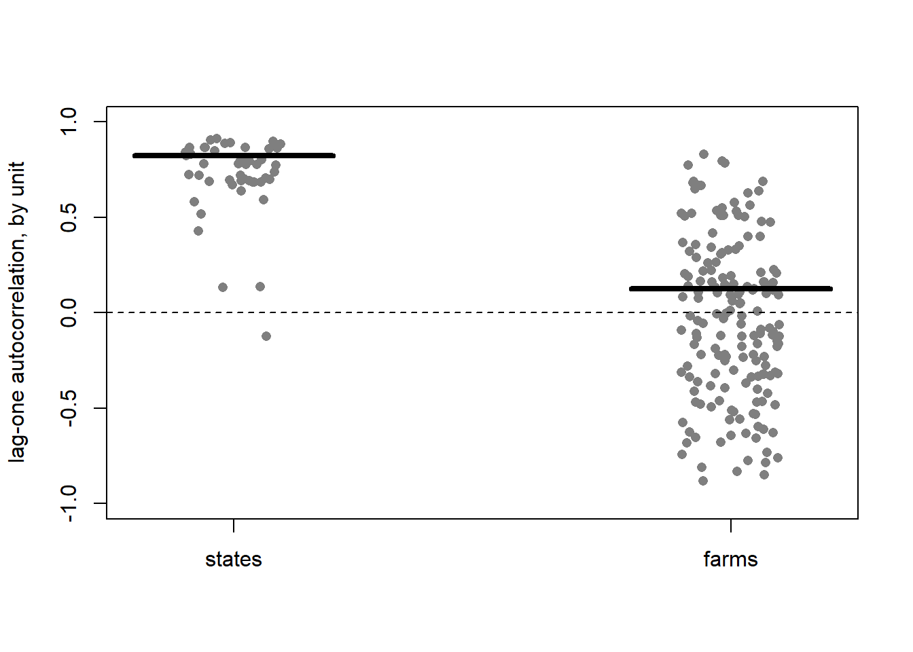
Read it.
- Rice, each given the other two. C.1 = 372 (spatial) and C.3 = 76 (farm effect) reject hard; C.2 = 11.9 with p = 0.0006 (serial) rejects less hard. The full fit gives φ = 0.25, ψ = 0.13 and λ = 0.61, each with a t statistic that echoes its test. So: the village shock is the strongest thing in the error; a farm carries about an eighth of last season’s shock into this one, real but small.
- House prices. C.2 = 216; ψ = 0.82 with a standard error of 0.015, and almost every state’s innovations correlate above 0.5 with last year’s. So: the static two-stage model is incomplete in time. A state’s shock is four fifths still there a year later, which is what Holly et al. (2010) model with lagged prices, and what the dynamic chapter takes up.
- Misleads (the joint test). J = 320 on rice. So: it rejects whenever any of the three is present and says nothing about which; read it last, if at all.
Next. Read the spatial lag fits as effects on the map rather than as coefficients (direct and indirect effects). Serial correlation of this size in house prices sends the panel to the serial correlation tests and then to dynamic panels before any slope is reported.
NoteRecipe
# f: a formula; df: a data.frame with the two index columns; d: a
# pdata.frame; w: the matrix; listw: spdep::mat2listw(w, "W").
splm::bsjktest(f, data = df, index = c("id", "t"), listw = listw, test = "C.2")
splm::spreml(f, data = d, w = w, lag = FALSE, errors = "semsrre")
splm::spreml(f, data = d, w = w, lag = FALSE, errors = "semsr")
CautionPitfalls
Two interfaces, two spellings. bsjktest takes a plain data.frame with index =; spreml takes the matrix as w, where spml takes a listw. Mixing them up fails late and unhelpfully.
Time. The full rice fit takes about six seconds and the C.2 test about four; on a panel of 170 units they take longer. Quarto’s freeze keeps them from running on every render.
ψ is a nuisance parameter here, not a model. A serial correlation of 0.8 in the errors is a sign of omitted dynamics, not a feature to keep. The dynamic chapter owns that question.
TipBook check
Croissant and Millo (2019, sec. 10.4.2.1, Example 10.15) print J = 319.5, C.1 = 371.5, C.2 = 11.894431 with p = 0.000563 and C.3 = 75.8, and [Example 10.16] φ = 0.2500, ψ = 0.1250 and λ = 0.6136 for the full fit. The rice chunks above are those runs.
4.7 Direct and indirect effects
Question. Income rises 10% in Ohio and nowhere else. How much do Ohio’s house prices rise, how much do its neighbours’ rise, and how much of Ohio’s rise came back through them?
Intuition. With \(\rho W y\) on the right-hand side, a change in Ohio’s income moves Ohio’s price by β, which moves Pennsylvania’s price by ρ times its share of Pennsylvania’s neighbours, which moves Ohio’s price again. The chain never ends, and the model sums it: the reduced form is \(y = (I - \rho W)^{-1}(X\beta + u)\), so the effect of regressor k on every unit’s outcome is a whole N × N matrix. LeSage and Pace (2009, ch. 2) read it in three numbers. The average of its diagonal is the direct effect, a unit’s own response, feedback included. The average of its row sums is the total effect of raising \(x_k\) everywhere. The difference is the indirect effect, what spills to other units. β is none of the three.
Why the coefficient of a spatial lag model is not a marginal effect, how the three averages are built, and why a spatial error model has no indirect effects: direct and indirect effects.
For regressor k with slope \(\beta_k\) (LeSage and Pace 2009, sec. 2.7):
\[ S_k = (I - \rho W)^{-1} \beta_k, \qquad \text{direct} = \frac{1}{N}\operatorname{tr}(S_k), \qquad \text{total} = \frac{1}{N}\, \iota' S_k\, \iota, \]
and with a row-standardised W the total effect collapses to \(\beta_k / (1 - \rho)\), the spatial multiplier.
The computation. sar_impacts() builds \(S_k\) and the three averages; sar_impacts_mc() draws ρ and β from the fit’s asymptotic normal distribution and recomputes them 200 times for a standard error (LeSage and Pace 2009, sec. 5.2). splm::impacts() does the same, when it runs; see Pitfalls.
Run it. On the spatial lag fits of the fixed-effects section. The lag parameter is coef()[["lambda"]] in splm’s naming:
rho_hp <- coef(sar_hp)[["lambda"]]
sar_impacts(rho_hp, coef(sar_hp)["li_t"], usaw49)
coef(sar_hp)[["li_t"]] / (1 - rho_hp) direct indirect total
li_t 0.8268973 1.187516 2.014413
[1] 2.014413set.seed(1)
mc_hp <- sar_impacts_mc(sar_hp, usaw49, reps = 200)
round(mc_hp$se, 3) direct indirect total
[1,] 0.067 0.138 0.194rho_rice <- coef(sar_rice)[["lambda"]]
sar_impacts(rho_rice, coef(sar_rice)[inputs], riceww)
set.seed(1)
mc_rice <- sar_impacts_mc(sar_rice, riceww, reps = 200)
round(mc_rice$se, 3) direct indirect total
log(seed) 0.1370816 0.1383137 0.2753953
log(totlabor) 0.2362218 0.2383450 0.4745668
log(size) 0.5123983 0.5170039 1.0294022
direct indirect total
[1,] 0.025 0.028 0.052
[2,] 0.030 0.037 0.065
[3,] 0.032 0.054 0.078Ohio’s column of \(S\), drawn on the map, and the three effects of every regressor with their intervals:
S_hp <- solve(diag(49) - rho_hp * usaw49) * coef(sar_hp)[["li_t"]]
est <- rbind(income = mc_hp$estimate, mc_rice$estimate)
se <- rbind(mc_hp$se, mc_rice$se)
rownames(est) <- rownames(se) <- c("income", "seed", "labour", "land")
graphics::layout(matrix(1:2, 1), widths = c(1.3, 1))
graphics::par(mar = c(0, 0, 2, 0))
plot(sf::st_geometry(us), col = shade(S_hp[, "OHIO"]),
main = "Effect of Ohio's income")
graphics::par(mar = c(4, 6, 2, 1))
y <- rep(4:1, each = 3) + rep(c(0.2, 0, -0.2), 4)
cols <- rep(c("black", "firebrick", "steelblue"), 4)
plot(t(est), y, xlim = range(c(est - 1.96 * se, est + 1.96 * se)),
yaxt = "n", pch = 16, col = cols, xlab = "effect", ylab = "",
main = "Direct, indirect, total")
graphics::segments(t(est - 1.96 * se), y, t(est + 1.96 * se), y, col = cols)
graphics::axis(2, at = 4:1, labels = rownames(est), las = 1)
graphics::legend("bottomright", c("direct", "indirect", "total"),
col = c("black", "firebrick", "steelblue"), pch = 16,
bty = "n")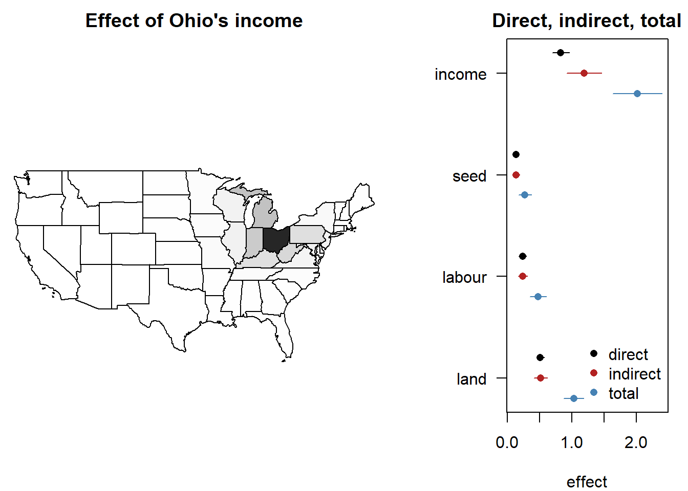
graphics::layout(1)Read it.
- House prices. β = 0.72; direct 0.83, indirect 1.19, total 2.01, which is \(0.72 / (1 - 0.65)\). So: a 10% rise in every state’s income raises prices by 20%, and more than half of that arrives through the neighbours. Ohio’s own rise is 8.3%, of which 1.1 points came back through Pennsylvania, Michigan and the rest.
- Rice. For land, β = 0.50; direct 0.51, indirect 0.52, total 1.03. So: a farm’s own land raises its output by half a per cent per per cent, with feedback adding 2% of that, and as much again spills over the village.
- Misleads (β as the elasticity). Reporting 0.72 as the income elasticity of house prices misses two thirds of the total effect; for rice land it halves it. So: a paper that fits a spatial lag and reads β has not reported an effect at all.
- A caveat on both. These are readings of the lag model. For rice the tests chose the error model, under which β is the whole effect and the indirect effects above do not exist; for house prices the choice between lag and error stayed open. The effects are what a lag model claims, not what the data proved.
Next. What the chapter can only state, not test (limits).
NoteRecipe
# fit: splm::spml(..., model = "within", lag = TRUE); w: the matrix.
rho <- coef(fit)[["lambda"]] # the lag, in splm's naming
sar_impacts(rho, coef(fit)[-1], w)
sar_impacts_mc(fit, w, reps = 200) # Monte Carlo standard errors
CautionPitfalls
splm::impacts() does not run. With splm 1.6-5 and spatialreg 1.4-3 it fails on every within fit, for every type:
splm::impacts(sar_rice, listw = ricelw, time = 6)Error in `update_bnames()`:
! !is.null(have_factor_preds) is not TRUEThe hand computation above is the same arithmetic, and the Book check compares it with the cross-sectional machinery that does run.
N × N inverses. type = "mult" inverts a dense N × N matrix; at a few thousand units that swaps. The trace approximations of spatialreg::trW with type = "MC" or "moments" avoid it; "moments" needs a symmetric W, or the similar symmetric form of a row-standardised one.
No indirect effects in a spatial error model. With the spatial term in the error, \(\partial y / \partial x_k' = \beta_k I\): the slope is the effect, and nothing spills.
A Durbin term changes the effects. With \(WX\) in the model the direct and indirect effects of \(x_k\) involve both \(\beta_k\) and the coefficient on \(Wx_k\), and the shortcut \(\beta_k / (1 - \rho)\) no longer holds (LeSage and Pace 2009, sec. 2.7).
TipBook check
No published number: ?spml shows its impacts() call on Produc commented out, and Croissant and Millo (2019) predate the method in splm. The hand computation is checked instead against spatialreg::impacts() on a cross-sectional spatial lag fit, one growing season of the rice panel, where that package’s method is documented and runs:
season1 <- RiceFarms[RiceFarms$time == 1, ]
cs <- spatialreg::lagsarlm(rice_f0, data = season1, listw = ricelw)
spatialreg::impacts(cs, listw = ricelw)
sar_impacts(cs$rho, coef(cs)[inputs], riceww)Impact measures (lag, exact):
Direct Indirect Total
log(seed) dy/dx 0.1678412 0.01696094 0.1848021
log(totlabor) dy/dx 0.2733155 0.02761949 0.3009350
log(size) dy/dx 0.5475228 0.05532909 0.6028519
direct indirect total
log(seed) 0.1678412 0.01696094 0.1848021
log(totlabor) 0.2733155 0.02761949 0.3009350
log(size) 0.5475228 0.05532909 0.6028519Three numbers per input, identical to the printed digits.
4.8 Limits
Three questions this chapter cannot answer with a published number. The first gets a simulation, as the time chapter does: evidence about this code on one design, and nothing more. The other two get a statement of what is missing and what to write instead.
Heterogeneous slopes
Question. If every state has its own income elasticity, is the pooled fixed-effects slope still right, and is its standard error?
Intuition. Let the slope vary, \(\beta_i = \beta + \eta_i\), and keep the spatial error. Pesaran and Tosetti (2011) show that both the fixed-effects slope and the mean-group slope, the average of the N unit-by-unit slopes met in the CCE section, stay consistent for β: spatial dependence is weak, and weak dependence averages out. What does not survive is the fixed-effects standard error. The part of the error that is \(\eta_i x_{it}\) is heteroskedastic and, with the spatial shocks, correlated across units; the conventional formula assumes neither. The mean-group standard error, the dispersion of the N slopes, is built for the first problem. Driscoll–Kraay standard errors, met in the core chapter (robust errors), are built for the second, but only as T grows: with T small, “the problem of consistent nonparametric covariance matrix estimation is much less tractable” (Baltagi 2021, 394).
Run it. 49 units on a 7 × 7 grid with rook_w(7), 20 periods, slopes drawn around 1 with standard deviation 0.3, and shocks that spill over with strength λ. First one draw at λ = 0.8:
W <- rook_w(7)
set.seed(1)
d <- sim_spatial_slope_panel(W, lambda = 0.8)
fe <- plm::plm(y ~ x, data = d, model = "within")
mg <- plm::pmg(y ~ x, data = d, model = "mg")
c(FE = coef(fe)[["x"]], MG = coef(mg)[["x"]])
c(FE_conventional = sqrt(vcov(fe)["x", "x"]),
FE_DriscollKraay = sqrt(plm::vcovSCC(fe)["x", "x"]),
MG = sqrt(vcov(mg)["x", "x"])) FE MG
1.143557 1.123648
FE_conventional FE_DriscollKraay MG
0.05687305 0.05108989 0.06104085 Then 200 draws at three values of λ, counting how often each 95% interval covers the true mean slope of 1:
# One replication: the three intervals above, kept for whether they cover 1.
covers <- function(d) {
fe <- plm::plm(y ~ x, data = d, model = "within")
mg <- plm::pmg(y ~ x, data = d, model = "mg")
inside <- function(b, se) abs(b - 1) <= 1.96 * se
c(FE_conventional = inside(coef(fe)[["x"]], sqrt(vcov(fe)["x", "x"])),
FE_DriscollKraay = inside(coef(fe)[["x"]],
sqrt(plm::vcovSCC(fe)["x", "x"])),
MG = inside(coef(mg)[["x"]], sqrt(vcov(mg)["x", "x"])))
}
set.seed(1)
lambdas <- c(0, 0.4, 0.8)
coverage <- sapply(lambdas, function(l) {
rowMeans(replicate(200, covers(sim_spatial_slope_panel(W, l))))
})
colnames(coverage) <- paste0("lambda_", lambdas)
coverage lambda_0 lambda_0.4 lambda_0.8
FE_conventional 0.80 0.755 0.845
FE_DriscollKraay 0.68 0.680 0.775
MG 0.97 0.965 0.910cols <- c("firebrick", "darkorange", "black")
graphics::matplot(lambdas, t(coverage), type = "b", pch = 16, lty = 1,
col = cols, xlab = "spillover strength, lambda",
ylab = "coverage of the 95% interval", ylim = c(0.5, 1))
graphics::abline(h = 0.95, lty = 2)
graphics::legend("bottomleft", rownames(coverage), col = cols, pch = 16,
lty = 1, bty = "n")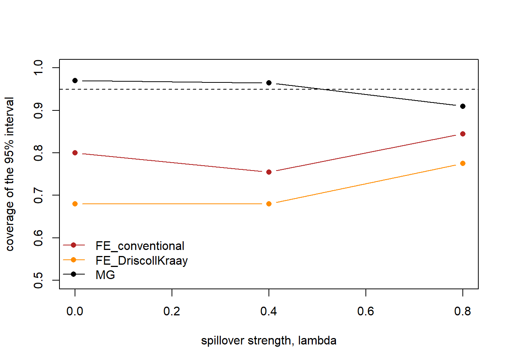
Read it.
- Both slopes are centred. FE and MG land within 0.02 of each other in the draw above, and the coverage of the mean-group interval does not drift with λ until the strongest spillover. So: Pesaran and Tosetti (2011) hold on this design: spatial errors do not bias either estimator of the mean slope.
- The conventional interval is too short. Its coverage is 0.80, 0.76 and 0.85 against a nominal 0.95, and λ does not drive it. So: the damage is the slope heterogeneity, not the spatial shocks; the plain fixed-effects standard error overstates what is known at every λ.
- Driscoll–Kraay is worse at T = 20. Coverage 0.68 to 0.78. So: the estimator that is robust to spatial and serial dependence as T → ∞ is not robust at twenty periods; Baltagi (2021, 394) warns of exactly this, and the house-price panel’s 29 years sit close to the edge.
- The mean-group interval holds, until λ = 0.8. Coverage 0.97 and 0.97, then 0.91. So: when slopes may differ, report the mean-group slope with its own standard error; under strong spillover, the N slopes stop being N independent pieces of evidence and even that interval shortens.
Next. With 29 years per state the mean-group estimator runs; with 6 seasons per farm it does not (four parameters from six observations). Rerun this table at your own N, T and W before trusting any of the three, and read the 200-draw rates with their noise of about ±0.03.
Dynamic spatial panels
Question. Last year’s price moves this year’s, and last year’s neighbours’ prices too. Can one model hold the time lag and the spatial lag at once?
What the theory says. The model is (Pesaran 2015, eq. 30.27)
\[ y_{\cdot t} = \alpha + \gamma\, y_{\cdot,t-1} + \rho\, W y_{\cdot t} + \lambda\, W y_{\cdot,t-1} + X_{\cdot t}\beta + u_{\cdot t}, \]
with the third term the space-time diffusion: a neighbour’s shock arrives a period late. It is stable when \(|\gamma| + |\rho| + |\lambda| < 1\) for a W that is row and column standardised (Pesaran 2015, 810). Yu et al. (2008) give three regimes for its maximum-likelihood estimator: with T large relative to N it is centred; with N proportional to T it is not, and needs a bias correction; with N large relative to T it converges at rate T only (Baltagi 2021, 406–7). A panel of 170 regions over 20 years is in the third regime at best.
What runs. Nothing, in R. The estimator is in Stata’s xsmle (Belotti et al. 2017) and in Elhorst’s MATLAB code (Elhorst 2014). What a reader might try instead, a lagged outcome fed to spml, is shown here so that it is not mistaken for the real thing:
hp_dyn <- data.frame(state = hp_idx[[1]], year = hp_idx[[2]],
lp_t = as.numeric(hp$lp_t),
lp_t_lag = as.numeric(plm::lag(hp$lp_t)),
li_t = as.numeric(hp$li_t))
hp_dyn <- plm::pdata.frame(stats::na.omit(hp_dyn), index = c("state", "year"))
dyn <- splm::spml(lp_t ~ lp_t_lag + li_t, data = hp_dyn, listw = usalw,
model = "within", lag = TRUE, spatial.error = "none")
summary(dyn)$CoefTable
sum(abs(coef(dyn)[c("lambda", "lp_t_lag")])) Estimate Std. Error t-value Pr(>|t|)
lambda 0.2955309 0.01781218 16.59150 8.028701e-62
lp_t_lag 0.6497742 0.01539902 42.19581 0.000000e+00
li_t 0.5430097 0.03670415 14.79423 1.595925e-49
[1] 0.9453051Read it. The time lag and the spatial lag together stay inside the stability bound, which is the one check that can be made. The coefficient on the lagged outcome is biased downward by about \((1 + \gamma) / T\) (Baltagi 2021, 188), the Nickell bias that the dynamic chapter takes up, and the spatial lag inherits the regime problem above with no correction available. So: write “a dynamic spatial specification was not estimated; no R implementation with a verified target exists”, and give the stability check as the only number.
Forecasting
Question. Does the spatial model predict next year’s prices better than the plain fixed-effects one?
What the theory says. Baltagi and Li (2006) derive the best linear unbiased predictor for a random-effects panel with spatial errors (Baltagi 2021, eq. 13.27): the forecast is \(x'\hat\beta\) plus a term that borrows from the unit’s own past residuals and its neighbours’, through \((I - \lambda W)^{-1}\). With the unit effect fixed, or its variance zero, that term drops out entirely (Baltagi 2021, 408), and the spatial model’s forecast is the fixed-effects forecast with a better \(\hat\beta\). The two anchor texts then disagree about whether the spatial terms help out of sample: on cigarette demand they gave the best root mean squared error (Baltagi 2021, 408); on liquor demand they did not, except one year ahead (Pesaran 2015, Table 30.2).
What runs. No predict method for splm objects; effects() extracts the fixed effects, and the spatial predictor has to be assembled by hand from the equation. The question is answered on one’s own panel, by a rolling-origin comparison of root mean squared errors, not by a citation.
CautionPitfalls
Not implemented anywhere in this book’s tools. The joint, marginal and conditional LM and LR tests of Debarsy and Ertur (2010) for the fixed-effects case; the Mundlak-style test of the fixed-effects assumption; the heteroskedasticity-robust GM estimators of Lin and Lee (2010) and their panel extension, since sphet (Piras 2010) is cross-sectional only; the moving-average and error-component forms of spatial error (Pesaran 2015, eqs. 30.5–30.6); eigenvector filtering as a check on the SAR functional form (Tiefelsdorf and Griffith 2007), which spatialreg implements for a cross-section only. Each is a sentence in a paper’s limitations, not a substitute presented as the real thing.
TipBook check
None, for any subsection. .docs/panel-spat-PLAN.md records no published target for the Pesaran–Tosetti variance, and the dynamic and forecasting targets live in Stata output on data that R does not ship.
4.9 Summary
What the two panels say. Once the national force is out of US house prices, what is left follows the map: neighbouring states’ residuals correlate at 0.5 on average, the shuffled maps never come close, and a spatial lag on the defactored residuals is 0.65. On the transformed panel the spatial error is 0.69 and the income elasticity 0.86, down from the CCEP 1.20; the lag and error models cannot be told apart, and the errors carry a serial correlation of 0.82 that sends the panel to the time chapter. Rice output in West Java carries a village shock with λ ≈ 0.8, a farm effect that the spatial Hausman test finds correlated with the inputs, a serial correlation of 0.13, and no spillover from a neighbour’s harvest; the fixed-effects spatial error model is the one to report, with GM and ML agreeing to the third decimal.
Decision table.
| If | Then |
|---|---|
| Units sit on a map and the CD test or α says dependence is weak | Build W and run its four checks (weights) |
| A national factor is present (α near 1) | Take it out first with CCE; then test for space on what is left (map) |
| Local CD rejects but the shuffled maps do not | No spatial structure; the dependence is a factor or noise. Robust standard errors, no spatial model |
| Both reject | The dependence follows the map; choose lag or error (lag or error) |
| Only the robust error test rejects | Spatial error: FE stays consistent, the spatial fit buys precision (fixed effects) |
| Only the robust lag test rejects | Spatial lag: FE without it is biased; report impacts, not β (effects) |
| Both robust tests reject | Fit SEM, SAR and SARAR; with one W the SARAR may not separate them. Report both |
| The SEM residuals still reject the shuffle | Test the filtered innovations \((I - \lambda W)u\), not \(u\) |
| The spatial Hausman test does not reject, under the model the tests chose | Random effects admissible; the KKP and Anselin forms differ only when φ is large (random effects) |
| The Hausman verdict flips between the lag and the error model | Report the verdict under the model the robust tests chose; the other is not evidence |
| The C.2 test rejects with a large ψ | The model is incomplete in time (serial correlation) |
| Slopes may differ across units | Mean-group slope with its own standard error, or FE with Driscoll–Kraay (limits) |
| Errors are heteroskedastic | Spatial ML is inconsistent; keep the GM fit |
The whole recipe, for a model f on a pdata.frame d with weights w, after the national force has been handled:
listw <- spdep::mat2listw(w, style = "W") # 1. W
w_checks(w)
plm::pcdtest(d$y, w = w) # 2. follows the map?
splm::rwtest(d$y, w = w, replications = 999, seed = 1)
splm::slmtest(f, data = d, listw = listw, # 3. lag or error?
model = "within", test = "rlml")
splm::slmtest(f, data = d, listw = listw,
model = "within", test = "rlme")
sem <- splm::spml(f, data = d, listw = listw, # 4. fit
model = "within", spatial.error = "b")
sar <- splm::spml(f, data = d, listw = listw,
model = "within", lag = TRUE, spatial.error = "none")
e <- spatial_filter(splm_residuals(sem, plm::index(d)), w,
coef(sem)[["rho"]], plm::index(d))
splm::rwtest(e, w = w, replications = 999, seed = 1) # residual check
splm::bsktest(f, data = d, listw = listw, test = "CLMmu") # 5. random effects?
splm::sphtest(f, data = d, listw = listw,
spatial.model = "error", method = "ML")
splm::bsjktest(f, data = df, index = c("id", "t"), # 6. serial too?
listw = listw, test = "C.2")
sar_impacts(coef(sar)[["lambda"]], coef(sar)[-1], w) # 7. effectsNext. The time chapter asks whether the series wander. The core chapter owns the heteroskedasticity check that decides between the ML and GM fits here (heteroskedasticity), the tests for a serial correlation of 0.82 (serial correlation), and the robust standard errors that replace a spatial model when the shuffled maps find nothing (robust errors). The dynamic chapter says what to do when last year’s price belongs on the right-hand side.